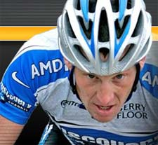
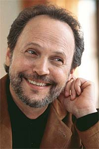

Find out about the charities your favorite celebrities support

At a time of rising crime rates and violence in our cities, Nancy Cartwright is sounding off in an effort to make a difference. Ironically, Nancy has voiced hundreds of animated characters over the past two decades, including that of Bart of The Simpsons phenomenon. But the Emmy winner also speaks for concerned and frustrated residents in her community. So eloquently, in fact, that Northridge, California has named her their honorary Mayor. "I think they made me honorary mayor because I have a big mouth and I'm a ten year-old boy at heart," she stated modestly.
It's more likely that San Fernando Valley residents appreciate this Hollywood celebrity for her ability to affect change. "I essentially get paid a lot of money to just burp and fart," said Nancy referring to her role at Fox Studios voicing the Bart Simpson character. "I make enough money to where I can focus on good things, and I have the freedom to use my time anyway I want. I feel so blessed and this is the least I can do to give back."
Two years ago, Nancy was searching for ways to volunteer her services to her community and visited, of all places, her local Chamber of Commerce. "I don't have anything to sell," she politely interjected during a meeting, "But, I'm the voice of Bart Simpson and I want to help?"
Wayne Adelstein, CEO and President of North Valley Regional Chamber of Commerce, is also the chairman of the board for the Valley Economic Development Center. Adelstein thought that a Hollywood celebrity was just the thing that one of his pet projects needed. He assured Nancy that her heart was in the right place, but explained to her that the Chamber of Commerce might not be the higher calling she was aiming for.
Adelstein introduced Nancy to Lorraine New, President of the Devonshire Police Activities League Supporters (PALS). "Loraine has such an amazing energy and she sets the tone for the whole group," exclaims Nancy. "We have a great relationship. It's like a divine intervention, with our purposes aligned."
Nancy has served as a fundraiser for the Devonshire PALS board of directors ever since, lightening the burden of community officials campaigning for a new PALS Youth Center. So far the team of supporters has raised all but $200,000 of the $2.5 million needed to break ground on the new facility. "My celebrity status has helped," said Nancy. "We're rounding the final turn."
Creative in her methods when it comes to fundraising, Nancy invited over 300 celebrities and VIPs to her home for Monte Carlo Night last year. The private party featured a charity poker tournament and an auction to benefit PALS. "Councilman Greig Smith and his office promoted our last event as a grassroots campaign," boasted Nancy about her city official acquaintance.
The event was not only a successful fundraiser, but it also generated a lot of local and mainstream media buzz, inevitably raising awareness. The news reached Mayor Antonio Villaraigosa who was so impressed with the performance from such a small group of volunteers that he added a $1 million grant to the collection. Nancy was so inspired by the outpouring of support that she committed herself to finishing what she started. On 29 September Nancy will host the Second Annual Monte Carlo Night. (Details at the end of this feature)
"I'm going to keep throwing these events until our mission to build the youth center is accomplished."
But the clock is ticking, and the current 800-square-foot Park Parthenia Community Family Center is temporary. Thousands of youth benefit from PALS' services and dedicated volunteers every year, making it clear that a larger facility is urgently needed.
"Officer Sandoval is there every single day," says Nancy referring to Elizabeth who runs the PALS Youth Center, "with 200 kids going through it a week." The proposed new Devonshire PALS Youth Center will allow for increased youth membership, expanding the very programs and services that will discourage, and eventually diminish, gang activity. "My employees actually tutor kids on the weekends," beams Nancy about her staff. "We even tested some of the kids for improved reading skill levels." Nancy also explains the center's strategic location. "Our neighborhood has the highest level of gang infiltration of any in Los Angeles."
PALS is hoping to break ground on the new 5,000 square-foot facility sometime this year, but plans have been delayed due to funding requirements. "We're only $200,000 shy of our goal," exclaimed Nancy. "Once we've raised the rest of the money we can start building." The Devonshire PALS Youth Center plans include an education room for studies and homework, a computer lab, a library, a mini-gymnasium for sports programs and activities, and outdoor sport courts. The educational programs, adventurous field trips, and wholesome recreation are not only beneficial for local at-risk youth, but could turn the tide for local residences and businesses.
The simple theory of cause and effect applies to today's growing gang problem. Gangs break down a community's social structure and that perpetuates when at-risk youth lack alternative supervision, guidance, and recreation. Too often our youth have nowhere to go, are exposed to and learn to associate with gangs, and are susceptible to recruitment. Worse yet, they may become victims of crime and violence themselves. Nancy believes the Devonshire PALS Youth Center will provide Los Angeles with a long-term solution.
"This community youth center is going to make a big difference in providing education and alternative recreation. I want it to serve as a model for others in the future."
 The Los Angeles Police Department (LAPD) Devonshire Police Activity League Supporters (PALS) has proved that it effectively deters gangs and prevents local crime. For more than 30 years PALS has provided after school and weekend enrichment programs for at-risk children and teens. Those programs help to build strong and positive relationships between youth and the LAPD.
PALS takes a proactive approach in promoting trust and understanding between young people and police officers by bringing youth under the supervision and constructive influence of dedicated law enforcement professionals. The program is based on the conviction, that young people—if they are reached early enough—can develop strong and positive attitudes toward police officers and the law.
Read more about PALS and how you can help their Cause... Devonshire PALS.
The Los Angeles Police Department (LAPD) Devonshire Police Activity League Supporters (PALS) has proved that it effectively deters gangs and prevents local crime. For more than 30 years PALS has provided after school and weekend enrichment programs for at-risk children and teens. Those programs help to build strong and positive relationships between youth and the LAPD.
PALS takes a proactive approach in promoting trust and understanding between young people and police officers by bringing youth under the supervision and constructive influence of dedicated law enforcement professionals. The program is based on the conviction, that young people—if they are reached early enough—can develop strong and positive attitudes toward police officers and the law.
Read more about PALS and how you can help their Cause... Devonshire PALS.

 Jane Seymour:
American Red Cross
Jane Seymour:
American Red CrossJane Seymour is a member of the Celebrity Cabinet with the Red Cross. Already active in philanthropic endeavors here and abroad, Ms. Seymour's involvement with the Red Cross will help educate those around the globe on the importance of Red Cross services. She has been encouraging children in schools across the US to donate $1 for vaccinations in lesser-developed countries around the world. $1 covers the cost of 1 child's vaccination, so each child who donates will be paying to vaccinate another child.
Jane has also supported the following charities:
ChildHelp USA, City Hearts, National Children's Advocacy Center, Children Uniting Nations, Christopher Reeve Foundation , Dress for Success, Entertainment Industry Foundation, Heifer International, Somaly Mam Foundation, Starkey Hearing Foundation, What A Pair, and The Reeve Irvine Research Center. Katie Couric: National Colorectal Cancer Research Alliance
Katie Couric: National Colorectal Cancer Research Alliance
Katie Couric is working to find a cure for a silent killer... colorectal cancer, otherwise known as colon cancer. It is one of the most deadly forms of cancer in the U.S.- but it doesn't have to be. The National Colorectal Cancer Research Alliance (NCCRA), a program of the Entertainment Industry Foundation, is dedicated to the eradication of colorectal cancer by promoting the importance of early medical screening and funding research to develop better tests, treatments, and ultimately a cure.

 Actress, model and mom, Brooke Shields, has teamed up with Ronald McDonald House Charities to serve as ambassador. To date, Ronald McDonald Houses have provided more than 10 million families with temporary residences near medical facilities where their children are being treated for serious illnesses such as cancer. By creating, finding and supporting programs that directly improve the health and well-being of children, Ronald McDonald House Charities (RMHC) is working to better the lives of children and their families around the world.
Actress, model and mom, Brooke Shields, has teamed up with Ronald McDonald House Charities to serve as ambassador. To date, Ronald McDonald Houses have provided more than 10 million families with temporary residences near medical facilities where their children are being treated for serious illnesses such as cancer. By creating, finding and supporting programs that directly improve the health and well-being of children, Ronald McDonald House Charities (RMHC) is working to better the lives of children and their families around the world.
Laura Dern  supports the Children's Health Environmental Coalition, a national non-profit organization dedicated to educating the public, specifically parents and caregivers, about environmental toxins that affect children's health. The ultimate goal is to eliminate children's exposure to man-made toxic substances by ensuring everyone's right to know what is in their air, food, water and commercial products. CHEC is working to achieve this goal through increased scientific research, government policies which are more protective of children, and educating and mobilizing individuals- like you- around the country.
supports the Children's Health Environmental Coalition, a national non-profit organization dedicated to educating the public, specifically parents and caregivers, about environmental toxins that affect children's health. The ultimate goal is to eliminate children's exposure to man-made toxic substances by ensuring everyone's right to know what is in their air, food, water and commercial products. CHEC is working to achieve this goal through increased scientific research, government policies which are more protective of children, and educating and mobilizing individuals- like you- around the country.
Reba McEntire supports  First Book, a national non-profit organization that strives to foster the joy of reading among children from low-income families. The group distributes new books and other educational materials to children enrolled in literacy programs. First Book has established a national network of local advisory boards (LAB) comprised of volunteers who work with the program at the local level. During 2000, the LAB network provided more than four million books to children across the country.
First Book, a national non-profit organization that strives to foster the joy of reading among children from low-income families. The group distributes new books and other educational materials to children enrolled in literacy programs. First Book has established a national network of local advisory boards (LAB) comprised of volunteers who work with the program at the local level. During 2000, the LAB network provided more than four million books to children across the country.
 Her chance meeting on the streets of New York with a devoted father and his young son led four-time Oscar-nominated actress Julianne Moore to become an advocate in the fight to find a cure for Tuberous Sclerosis, a largely unknown genetic disorder marked by the invasive growth of tumors in all the body's vital organs. "The sight of this young boy, Tommy Lindsey, with a stitched and bandaged head, and the simple plea for help from his father made it difficult for her to say no", Moore said in her testimony before the House Appropriations Labor-HHS-Education Subcommittee. "We must find a cure for Tuberous Sclerosis to put an end to this disease."
Her chance meeting on the streets of New York with a devoted father and his young son led four-time Oscar-nominated actress Julianne Moore to become an advocate in the fight to find a cure for Tuberous Sclerosis, a largely unknown genetic disorder marked by the invasive growth of tumors in all the body's vital organs. "The sight of this young boy, Tommy Lindsey, with a stitched and bandaged head, and the simple plea for help from his father made it difficult for her to say no", Moore said in her testimony before the House Appropriations Labor-HHS-Education Subcommittee. "We must find a cure for Tuberous Sclerosis to put an end to this disease."

 Emeril Legasse:
Emeril Legasse:
The Emeril Lagasse Foundation seeks to inspire, mentor, and enable all young people, especially those from disadvantaged circumstances, to realize their full potential as productive and creative individuals. The foundation supports and encourages programs creating developmental and educational opportunities for children within communities where Emeril's restaurants operate.


ONE is a new effort by Americans to rally Americans- one by one- to fight the emergency of global AIDS and extreme poverty. ONE is students and ministers, punk rockers and NASCAR moms, Americans of all beliefs and every walk of life, united as one to help make poverty history. ONE believes that allocating an additional one percent of the U.S. budget toward providing basic needs like health, education, clean water and food would transform the futures and hopes of an entire generation in the world's poorest countries. ONE also calls for debt cancellation, trade reform and anti-corruption measures in a comprehensive package to help Africa and the poorest nations beat AIDS and extreme poverty.
 Bill Clinton: The William J. Clinton Foundation
Bill Clinton: The William J. Clinton Foundation
The mission of the William J. Clinton Foundation is to strengthen the capacity of people in the United States and throughout the world to meet the challenges of global interdependence. To advance this mission, the Clinton Foundation has developed programs and partnerships in the following areas: Health Security, Economic Empowerment, Leadership Development and Citizen Service, and Racial Ethnic and Religious Reconciliation.
Through generous donations, the Clinton Foundation has been able to dramatically lower the cost of HIV/AIDS medication and tests, has helped countries scale up treatment, and has begun to bring quality healthcare to the world's children and those in rural areas.

The Tommy Hilfiger Corporate Foundation, Inc. believes education is the cornerstone for today's youth. For America to remain competitive in the global marketplace, a stronger emphasis should be placed on exposing youth to experiences in education and career related opportunities. By focusing on preparing students for the demands of today's global society, the goal of the Tommy Hilfiger Corporate Foundation is to be a major force in improving education.
Jerry Seinfeld continues to support Autism Speaks, by hosting a star-studded charity event to support Autism speaks, an organization dedicated to funding global biomedical research into the causes, prevention, treatments, and cure for autism, bringing hope to all who deal with the hardships of this disorder. .
 Paul SorvinoBorn with severe asthma, Paul Sorvino founded the Sorvino Asthma Foundation to help make a difference. Paul Sorvino has performed in Goodfellas, That Championship Season, Law and Order, and Bulworth. At the beginning of his career, Paul was in serious trouble because of his asthma. He doubted he could continue his stage work, due to severe breathing difficulties. Fortunately, two of his fellow actors showed him a special yoga breathing technique that changed his life. He has been Asthma-free ever since.
Paul SorvinoBorn with severe asthma, Paul Sorvino founded the Sorvino Asthma Foundation to help make a difference. Paul Sorvino has performed in Goodfellas, That Championship Season, Law and Order, and Bulworth. At the beginning of his career, Paul was in serious trouble because of his asthma. He doubted he could continue his stage work, due to severe breathing difficulties. Fortunately, two of his fellow actors showed him a special yoga breathing technique that changed his life. He has been Asthma-free ever since.


For four-time NASCAR Cup Series champion Jeff Gordon, victory lane is the place where hard work, determination, and experience have combined for an amazing number of wins. Off the track, Jeff seeks to help children and their families gain their own victories over chronic and often debilitating illnesses through The Jeff Gordon Foundation.
Established in 1999, The Foundation primarily provides support for four designated charities, also offering support on a case-by-case basis for other charitable organizations. Overcoming serious illness is the biggest victory of all, and The Jeff Gordon Foundation is grateful for the opportunity to work with courageous children and their families.

The Dan Marino Foundation was established in March 1992 by Dan and Claire Marino to raise money for various children's charities in South Florida. The mission of The Dan Marino Foundation is to support integrated treatment programs for children with chronic illnesses and developmental disabilities, so they can lead healthier and happier lives. Through the generous support of public and private donations and special events The Dan Marino Foundation has distributed over $7,000,000.

 The Lance Armstrong Foundation (LAF) believes that in the battle with cancer, unity is strength, knowledge is power, and attitude is everything. Founded in 1997 by cancer survivor and champion cyclist, Lance Armstrong, the LAF provides the practical information and tools people living with cancer need to live strong. Their mission is to inspire and empower people with cancer to live strong. They serve their mission through education, advocacy, public health, and research programs.
The Lance Armstrong Foundation (LAF) believes that in the battle with cancer, unity is strength, knowledge is power, and attitude is everything. Founded in 1997 by cancer survivor and champion cyclist, Lance Armstrong, the LAF provides the practical information and tools people living with cancer need to live strong. Their mission is to inspire and empower people with cancer to live strong. They serve their mission through education, advocacy, public health, and research programs.
 Derek Jeter: Turn 2 Foundation
Derek Jeter: Turn 2 FoundationTurn 2 Foundation, designed by Derek Jeter, is aimed at creating and supporting signature programs and activities that motivate young people to turn away from drugs and alcohol and "TURN 2" healthy lifestyles. Through these ventures, the Foundation strives to create outlets that promote and reward academic excellence, leadership development, and positive behavior. Turn 2's goal is to see the children of these programs grow safely and successfully into adulthood and become the leaders of tomorrow.
 The Magic Johnson Foundation, founded in December 1991 by Earvin "Magic" Johnson, is recognized as a nonprofit public charity under section 501(c)(3) of the Internal Revenue Code.
The Magic Johnson Foundation, founded in December 1991 by Earvin "Magic" Johnson, is recognized as a nonprofit public charity under section 501(c)(3) of the Internal Revenue Code.
The mission of the Foundation is to identify and support community-based organizations that address the educational, health, and social needs of children, young adults, and inner-city communities throughout the nation. MJF also donates needed funds to organizations that provide HIV/AIDS prevention and health care education to the minority community.

 The Donovan McNabb Foundation was established in June 2000 by McNabb in honor of his close family members that have been diagnosed with diabetes. Donovan started his foundation so that he could help provide awareness and improve the lives of those that suffer from diabetes, as well as the families of those who have diabetes.
The Donovan McNabb Foundation was established in June 2000 by McNabb in honor of his close family members that have been diagnosed with diabetes. Donovan started his foundation so that he could help provide awareness and improve the lives of those that suffer from diabetes, as well as the families of those who have diabetes.
Over 15 million people in the United States alone have diabetes, but nearly 5 million people are unaware that they have contracted the disease. Preventative measures, however, can reduce the possibility of the spread of diabetes. These preventative measures include educating, regular exercise, controlled diet, and regular checkups by a doctor.

The Women's Sports Foundation is an educational nonprofit (501(c)(3) charity) organization founded in 1974 by tennis legend Billie Jean King so that girls following in her footsteps would not have to face the barriers she faced playing sports. The foundation is designed to advance the lives of girls and women through sports and physical activity.
 Robin Williams: Windfall Foundation
Robin Williams: Windfall FoundationRobin and Marsha Williams founded the Windfall Foundation, a philanthropic organization to raise money for many different charities such as Medecins Sans Frontieres (Doctors Without Borders), national organizations like The Pediatric AIDS Association and Make-A-Wish Foundation, as well as the local charities Project Open Hand, University of California at San Francisco and San Francisco General Hospital Pediatrics. Williams devotes much of his energy doing work for charities, including the Comic Relief fund raising efforts.
Robin Williams and Christopher Reeve were roommates at Juilliard where they studied drama and became lifelong friends. This led to Robin's involvement in The Christopher Reeve Foundation. Robin is also a cycling fan, known to own hundreds of bicycles and to attend the Tour de France. Through his interest in cycling, he has been a friend and supporter of Lance Armstrong and his foundation, performing at events for the foundation.

 Billy Crystal, Whoopi Goldberg, and Robin Williams will host Comic Relief 2006, a live three-hour comedy event to help the rebirth of New Orleans. Comic Relief 2006 will be presented live from Caesars Palace in Las Vegas on HBO and TBS, Saturday, November 18, at 9 pm ET.
Billy Crystal, Whoopi Goldberg, and Robin Williams will host Comic Relief 2006, a live three-hour comedy event to help the rebirth of New Orleans. Comic Relief 2006 will be presented live from Caesars Palace in Las Vegas on HBO and TBS, Saturday, November 18, at 9 pm ET.
 With Comic Relief's mission to unite the comedy community behind some of society's most relevant causes and pressing needs, the Comic Relief 2006 concert will help families affected by Hurricane Katrina in the rebirth of New Orleans, raising funds to help them rebuild their homes and tangibly address causes that kept victims from escaping. "1,836 people perished in Katrina and, a year later, more than 200,000 are still displaced because they lack the resources to rebuild their lives and homes, and the comedy community wants to help," said Bob Zmuda, the spokesperson for the charity. "Disasters like Katrina devastate the environment and cause suffering for all forms of life, both human and animal. Comic Relief is determined to address these tragedies by benefiting everyone from the elderly to children, and pets."
With Comic Relief's mission to unite the comedy community behind some of society's most relevant causes and pressing needs, the Comic Relief 2006 concert will help families affected by Hurricane Katrina in the rebirth of New Orleans, raising funds to help them rebuild their homes and tangibly address causes that kept victims from escaping. "1,836 people perished in Katrina and, a year later, more than 200,000 are still displaced because they lack the resources to rebuild their lives and homes, and the comedy community wants to help," said Bob Zmuda, the spokesperson for the charity. "Disasters like Katrina devastate the environment and cause suffering for all forms of life, both human and animal. Comic Relief is determined to address these tragedies by benefiting everyone from the elderly to children, and pets."
Comic Relief is seriously committed to helping end poverty and social injustice in the UK and poorest countries in the world by raising money from the general public by actively involving them in events and projects that are innovative and fun, informing, educating, raising awareness and promoting social change, allocating the funds raised in a responsible and effective way to a wide range of charities which are selected after careful research, ensuring that the Red Nose Day fundraising costs are covered by sponsorship in cash or in kind so that every penny raised goes to charity.
 Jerry Lewis: Muscular Dystrophy Association
Jerry Lewis: Muscular Dystrophy Association
Adults who used to watch as kids now introduce their own children to the 211/2-hour, star-studded variety show hosted by Jerry Lewis that simultaneously entertains, informs and raises funds for the service and research programs of the Muscular Dystrophy Association. In September of 2006, the Jerry Lewis Telethon for MDA Raised a record $61 Million.
The Leary Firefighters Foundation was founded in 2000 by actor Denis Leary in response to a fire that broke out in an abandoned warehouse in downtown Worcester, Massachusetts, his hometown, in December of 1999. The Leary Firefighters Foundation is dedicated to providing fire departments with funding and resources for up-to-date equipment and training.
 Cedric The Entertainer Charitable Foundation
Cedric The Entertainer Charitable Foundation
 Founded in 1995 by actor/comedian, Cedric The Entertainer and his sister, Sharita Kyles Wilson, the Cedric The Entertainer Charitable Foundation, Inc. is committed to enhancing the lives of youths and families in the state of Missouri. The Foundation's motto is to enlighten, educate, and entertain. In keeping with that, the foundation has established two primary ways in which to reach out and give back to the community: Scholarship Program and Cedrics Entourage.
Founded in 1995 by actor/comedian, Cedric The Entertainer and his sister, Sharita Kyles Wilson, the Cedric The Entertainer Charitable Foundation, Inc. is committed to enhancing the lives of youths and families in the state of Missouri. The Foundation's motto is to enlighten, educate, and entertain. In keeping with that, the foundation has established two primary ways in which to reach out and give back to the community: Scholarship Program and Cedrics Entourage.

The American Red Cross just honored Trace Adkins with their Crystal Cross Award. The organization’s President and CEO, Gail J. McGovern said, "TRACE brings humor, honesty, hard work, and grit to everything he does. We could not ask for a better representative of the Red Cross.
Coincidentally, country music star Trace Adkins just raised more than $1.5 million for the Red Cross which was his charity of choice to receive his win on The Celebrity Apprentice.
On America’s Newsroom he told Martha MacCullum why he competed for the Red Cross. “We all know that the Red Cross is always there when huge natural disasters like this happen, but I represented the Red Cross on the Celebrity Apprentice this year because sometimes we forget that they also respond to over 70,000 house fires a year in this country.â€
“Twenty-four hours a day, seven days a week, 365, there’s a Red Cross volunteer somewhere in this country selflessly helping somebody,†Adkins said.
The Heartland needs YOU TOO! DONATE to the RED CROSS!!  The American Red Cross is helping people in the Midwest and they need your help to supply shelter, food, relief supplies and emotional comfort after tornadoes destroyed homes and left thousands without power.
As many as 26 tornadoes were reported in Oklahoma, Kansas, Illinois and Iowa, according to the National Weather Service. Hardest hit is Oklahoma, where severe tornadoes ripped through several counties, destroying or damaging hundreds of homes and leaving as many as 35,000 in the dark. The Governor declared a state of emergency in 16 counties. The Red Cross is supporting first responders and is providing shelter, food, distributing relief items and clean-up supplies and working with local and state officials to ensure people get the help they need.
The American Red Cross is helping people in the Midwest and they need your help to supply shelter, food, relief supplies and emotional comfort after tornadoes destroyed homes and left thousands without power.
As many as 26 tornadoes were reported in Oklahoma, Kansas, Illinois and Iowa, according to the National Weather Service. Hardest hit is Oklahoma, where severe tornadoes ripped through several counties, destroying or damaging hundreds of homes and leaving as many as 35,000 in the dark. The Governor declared a state of emergency in 16 counties. The Red Cross is supporting first responders and is providing shelter, food, distributing relief items and clean-up supplies and working with local and state officials to ensure people get the help they need.
The Red Cross is also helping in Kansas, Iowa and Missouri, where storms left more than 71,000 people without power.
HOW TO HELP Those who would like to help people affected by disasters like tornadoes, floods and other crises can make a donation to American Red Cross Disaster Relief. People can donate by visiting www.redcross.org, calling 1-800-RED CROSS or texting the word REDCROSS to 90999 to make a $10 donation. These donations help provide food, shelter and emotional support to those affected by disasters. About the American Red Cross:The American Red Cross shelters, feeds and provides emotional support to victims of disasters; supplies about 40 percent of the nation's blood; teaches skills that save lives; provides international humanitarian aid; and supports military members and their families. The Red Cross is a not-for-profit organization that depends on volunteers and the generosity of the American public to perform its mission.
For more information, please visit redcross.org or join our blog at http://blog.redcross.org
FUNDRAISING IN YOUR LOCAL COMMUNITY FOR THE HEARTLANDTo all the Giving People
 The Tornado disaster in Oklahoma is weighing heavy on everyone’s hearts and minds across America and the world today. The fact that Ground Zero for the tornado was Plaza Towers Elementary School in the city of Moore, which took the lives of children, adds even more sadness. Thousands of people will need our help to start rebuilding and putting their lives back together over the coming weeks, months and even years, and we want to do what we can to help.
The Tornado disaster in Oklahoma is weighing heavy on everyone’s hearts and minds across America and the world today. The fact that Ground Zero for the tornado was Plaza Towers Elementary School in the city of Moore, which took the lives of children, adds even more sadness. Thousands of people will need our help to start rebuilding and putting their lives back together over the coming weeks, months and even years, and we want to do what we can to help.
Justfundraising.com along with Fundraisers.com are giving away 1000 Fundraising Donation Cards – each card raises $115 for a total of $115,000 that can be donated to this worthy cause. Now we need your help to go out there and raise the funds using these Donation Cards.
With every 10 donation cards, your group can raise $1,150 for the Oklahoma Tornado relief efforts. Whether you’re a church organization, a school or class, or simply an individual, this is your opportunity to help.
To find out more details about the FREE donation cards CLICK HERE
Let’s work together to make a difference!
Jolian Grant
President
JustFundraising.com
Annie Van Bebber
CEO
Fundraisers.com

David has been involved with KidsCharities.org since its inception. The Charity was founded by Cassidy's wife,
Sue Shifrin-Cassidy
in 1999. In 2003 the headquarters moved to Glasgow, Scotland where Caroline McFarlan runs the day-to-day organization.
With the tree of life as its symbol, Sue's dream continues to grow. KidsCharities UK reaches out and helps children from all over the globe, including the United States of America, Malawi, South East Asia and the United Kingdom.
Among the charities which have benefited from recent events are: Tourettes Syndrome Research in Georgia, ChildLine, CHAS, Cot Death, Barnardos and UNICEF.
Leonardo is involved with Tree People and his own Foundation to spread awareness of the environment.
Established in 1998, the Leonardo DiCaprio Foundation has actively fostered awareness of environmental issues through participation with such organizations as Natural Resources Defense Council, Global Green, USA, the International Fund For Animal Welfare, and National Geographic Kids, to name a few.
The Foundation places particular emphasis on the issues of global warming, alternative and renewable energy sources, and the preservation of the planet's amazing biodiversity. TreePeople and the Foundation, along with Tree Musketeers joined forces to promote the incorporation of trees into urban neighborhoods and also to help reforest the decimated Southern California Mountains.
TreePeople's mission is to inspire the people of Los Angeles to take personal responsibility for the urban forest - educating, training and supporting them as they plant and care for trees and improve the neighborhoods in which they live, learn, work and play.
Project Angel Food's mission is to nourish the body and spirit of men, women, and children affected by HIV/AIDS and other serious illnesses.
The Project Angel Food Program delivers free and nutritious meals prepared with love. They act out of a sense of urgency because hunger and illness cannot wait. Project Angel Food was founded by Marianne Williamson in 1989.
 Courteney Cox-Arquette: Camp Laurel
Courteney Cox-Arquette: Camp Laurel
Camp Laurel provides hundreds of children living with HIV and AIDS an opportunity to enjoy the outdoors while forming support groups with their peers. For the first time, children realize that they are not alone in their fight against AIDS.
 Founded in 1988, My Friend's Place is a nonprofit Resource Center offering a comprehensive continuum of care that includes free emergency resources such as food and clothing in combination with health, educational, and therapeutic services to over 1,000 homeless youth and their children each year.
Founded in 1988, My Friend's Place is a nonprofit Resource Center offering a comprehensive continuum of care that includes free emergency resources such as food and clothing in combination with health, educational, and therapeutic services to over 1,000 homeless youth and their children each year.
 Starlight Starbright Children's Foundation is a non-profit organization dedicated to making a world of difference for seriously ill children and their families. They touch the lives of sick children and families all along their journey through a serious illness, from the time of diagnosis all the way through, in the hospital and at home.
Starlight Starbright Children's Foundation is a non-profit organization dedicated to making a world of difference for seriously ill children and their families. They touch the lives of sick children and families all along their journey through a serious illness, from the time of diagnosis all the way through, in the hospital and at home.

 Demelza House Children's Hospice aims to provide support to families who have a child with a life-limiting condition. They recognize that each child is a unique, developing individual whose best interests must be paramount. The motto of Demelza House is "Adding life to days when days cannot be added to life."
Demelza House Children's Hospice aims to provide support to families who have a child with a life-limiting condition. They recognize that each child is a unique, developing individual whose best interests must be paramount. The motto of Demelza House is "Adding life to days when days cannot be added to life."
David has been involved with KidsCharities.org since its inception. The Charity was founded by Cassidy's wife, Sue Shifrin-Cassidy in 1999. In 2003 the headquarters moved to Glasgow, Scotland where Caroline McFarlan runs the day-to-day organization.
With the tree of life as its symbol, Sue's dream continues to grow. KidsCharities UK reaches out and helps children from all over the globe, including the United States of America, Malawi, South East Asia and the United Kingdom.
Among the charities which have benefited from recent events are: Tourettes Syndrome Research in Georgia, ChildLine, CHAS, Cot Death, Barnardos and UNICEF.
Leonardo is involved with Tree People and his own Foundation to spread awareness of the environment.
Established in 1998, the Leonardo DiCaprio Foundation has actively fostered awareness of environmental issues through participation with such organizations as Natural Resources Defense Council, Global Green, USA, the International Fund For Animal Welfare, and National Geographic Kids, to name a few.
The Foundation places particular emphasis on the issues of global warming, alternative and renewable energy sources, and the preservation of the planet's amazing biodiversity. TreePeople and the Foundation, along with Tree Musketeers joined forces to promote the incorporation of trees into urban neighborhoods and also to help reforest the decimated Southern California Mountains.
TreePeople's mission is to inspire the people of Los Angeles to take personal responsibility for the urban forest - educating, training and supporting them as they plant and care for trees and improve the neighborhoods in which they live, learn, work and play.
Project Angel Food's mission is to nourish the body and spirit of men, women, and children affected by HIV/AIDS and other serious illnesses.
The Project Angel Food Program delivers free and nutritious meals prepared with love. They act out of a sense of urgency because hunger and illness cannot wait. Project Angel Food was founded by Marianne Williamson in 1989.
Courteney Cox-Arquette: Camp Laurel
Camp Laurel provides hundreds of children living with HIV and AIDS an opportunity to enjoy the outdoors while forming support groups with their peers. For the first time, children realize that they are not alone in their fight against AIDS.
Founded in 1988, My Friend's Place is a nonprofit Resource Center offering a comprehensive continuum of care that includes free emergency resources such as food and clothing in combination with health, educational, and therapeutic services to over 1,000 homeless youth and their children each year.
Starlight Starbright Children's Foundation is a non-profit organization dedicated to making a world of difference for seriously ill children and their families. They touch the lives of sick children and families all along their journey through a serious illness, from the time of diagnosis all the way through, in the hospital and at home.
Demelza House Children's Hospice aims to provide support to families who have a child with a life-limiting condition. They recognize that each child is a unique, developing individual whose best interests must be paramount. The motto of Demelza House is "Adding life to days when days cannot be added to life."


North West Cancer Research Fund is one of the oldest independent medical charities in the North West. Their aim is to provide grants to support fundamental research in the North West of England and North and Mid-Wales, into the causes of cancer and the mechanisms by which cancers arise and exert their effects.
Each year, The Streisand Foundation contributes to a wide variety of causes. The following list represents some of these charitable foundations.
Natural Resources Defense Council: Safeguarding the Earth, its people, its plants and animals, and the systems on which all life depends.
National Breast Cancer Coalition Fund: A grassroots effort to eradicate breast cancer through action and advocacy.
Institute for America's Future: Elaborating the message, policy initiatives, and critiques essential to a progressive economic and social agenda.
Human Rights Campaign Foundation: The largest national gay and lesbian advocacy organization, with more than 560,000 members.
Center for Public Integrity: Providing investigations and analyses by talented, responsible journalists to the American public.
Center on Budget and Policy Priorities: Conducting research and analysis on a broad range of government policies and programs, with an emphasis on those affecting low and moderate income Americans
 Project Magic is a program designed to give the gift of magic to people with various physical, psycho-social and developmental disabilities. People of both sexes and every age, regardless of their handicap, can successfully become involved in the program. It is of benefit to people with a variety of diagnoses, such as those with arthritis, spinal cord injury, brain injury, drug and alcohol abuse, chronic pain and learning disabilities.
Project Magic is a program designed to give the gift of magic to people with various physical, psycho-social and developmental disabilities. People of both sexes and every age, regardless of their handicap, can successfully become involved in the program. It is of benefit to people with a variety of diagnoses, such as those with arthritis, spinal cord injury, brain injury, drug and alcohol abuse, chronic pain and learning disabilities.
More info on Project Magic from USA Today
.gif) The Rainforest Foundation believes that the long-term protection of rainforests and the rights of indigenous communities to land, life and livelihoods, are inextricably linked. All its projects are undertaken collaboratively with local indigenous peoples or non-governmental organizations.
The Rainforest Foundation believes that the long-term protection of rainforests and the rights of indigenous communities to land, life and livelihoods, are inextricably linked. All its projects are undertaken collaboratively with local indigenous peoples or non-governmental organizations.
 The Elizabeth Taylor AIDS Foundation was founded in 1991 by Elizabeth Taylor to provide funding to organizations providing critically needed support services for people with HIV/AIDS, prevention services and education for populations most in need. Since its formation, ETAF has distributed more than $8 million to AIDS organizations around the world.
The Elizabeth Taylor AIDS Foundation was founded in 1991 by Elizabeth Taylor to provide funding to organizations providing critically needed support services for people with HIV/AIDS, prevention services and education for populations most in need. Since its formation, ETAF has distributed more than $8 million to AIDS organizations around the world.
 amfAR's mission is to prevent HIV infection and the disease and death associated with it and to protect the human rights of all people threatened by the epidemic of HIV/AIDS.
amfAR's mission is to prevent HIV infection and the disease and death associated with it and to protect the human rights of all people threatened by the epidemic of HIV/AIDS.
Childhelp USA exists to meet the physical, emotional, educational, and spiritual needs of abused and neglected children. We do so by focusing our efforts in the areas of treatment, prevention, and research.
The Cody Foundation is a non-profit organization in the memory of Cody Hulst to benefit young children facing cancer and other life-threatening diseases.
The Association to Benefit Children (ABC) was created to help poverty-stricken children and their families.
 Rosie's For All Kids Foundation was created in 1997, to provide financial support for non-profit programs serving economically disadvantaged and at-risk children and their families.
Rosie's For All Kids Foundation was created in 1997, to provide financial support for non-profit programs serving economically disadvantaged and at-risk children and their families.
Since inception, RFAK has helped thousands of children across the country through grant awards to high-quality child care and early education programs. The focus has been on center-based programs serving primarily low-income children in major urban areas where many families struggle to find quality child care and early education programs. Through these programs, young children have acquired the confidence, knowledge and skill they need to succeed.
Being a very nurturing human being Teri Hatcher has genuine, heartfelt compassion for any child that has been victimized. Ms. Hatcher understands that education is the key to prevention and that prevention will reduce predatory threats. Her role as the National Spokesperson for the AmberWatch Foundation demonstrates her sincere commitment to this cause.
The AmberWatch Foundation is a 501(c)(3) charity dedicated to the prevention of child abduction and molestation. Through its "Be Safe!" Education Program, the Foundation's mission is to (by the end of 2008) educate 25 million elementary-aged children and their parents on how to identify potential endangerment scenarios and stay out of the hands of abductors and predators.
When it comes to issues of personal safety, AmberWatch believes that if the children and parents can see it, hear it, and talk about it, they will learn it! The AmberWatch Foundation "Be Safe!" Education Program was created to dynamically and proactively educate children and parents on the dangers that exist, and how they can protect themselves.
The AmberWatch Foundation "Be Safe!" Education Program is a three-pronged approach to arming children against abductors and molesters... With the help of local law enforcement, the "Be Safe!" curriculum is presented in schools. The "Be Safe!" Book is distributed to children to ignite conversation between parents and children. The message is disseminated through print, radio, and television public service announcements nationwide as well.
The AmberWatch Foundation is all about prevention. And with the AmberWatch, attention is the key to prevention! The goal is to distribute 50,000 AmberWatches to at-risk children by the end of 2006.
Children wearing an AmberWatch can call attention to themselves at the touch of a button if they are feeling threatened or scared. The AmberWatch's trademarked alert signal and super-bright flashing LED lights mean a child needs help!
The AmberWatch is a tool for prevention. That's why proceeds from every retail sale of the AmberWatch go to support the AmberWatch Foundation. But here at AmberWatchFoundation.org, we have the very special opportunity for our visitors to sponsor AmberWatches for at risk children, while funding the AmberWatch Foundation and its mission to educate children and parents across the nation in abduction and molestation prevention. It's a win-win initiative!
Here's how it works:
Oftentimes those children who need the AmberWatch the most are those who would be least likely to get one. But you can make a difference. For every $25 you donate, an AmberWatch will go out to an at-risk child. At the same time, your $25 will help fund the AmberWatch Foundation and its mission. It's that simple. All you need to do is decide how many children you want to sponsor. Sponsor a child today!
More Information
AmberWatch Foundation Homepage
"Be Safe!" Program
Sponsor An At-Risk Child For An AmberWatch
Order An AmberWatch For Your Child
I was saddened to hear that Dana Reeve, widow of late actor Christopher Reeve, has died of lung cancer at age 44.
First known as a singer/actress, she became a symbol of compassion and dedication while caring for her husband during his near decade of paralysis. A lifelong nonsmoker, she announced her diagnosis in August 2005.
Lung cancer is the leading cancer killer for both men and women. Dana Reeve has brought much-needed attention to the fact that approximately 13% of its victims are non-smokers. In 2004 more than 170,000 new cases of lung cancer and over 160,000 deaths were attributed to the disease in the United States. Smoking is the leading cause, responsible for 87% of lung cancer cases, but there are a number of other factors that contribute, including secondhand smoke, radon, air pollution, and family history. More studies are needed to determine the cause of a 600% increase in lung cancer diagnosis in women since 1955. --Annie Van Bebber
To learn about the dangers of radon or to purchase a radon detection kit see the American Cancer Association
For suggestions or information on smoking cessation or the risks of lung cancer, contact the American Lung Association at (312) 243-2000.
The Christopher Reeve Paralysis Foundation
 The most valuable resource for many nonprofit organizations is often a phone call away and more than happy to help put a highly individual face on philanthropic efforts that generally take place with appropriate anonymity.
The most valuable resource for many nonprofit organizations is often a phone call away and more than happy to help put a highly individual face on philanthropic efforts that generally take place with appropriate anonymity.
Executive directors, administrative staff and dedicated volunteers tirelessly work for their clients without expecting anything in return. Those they provide support, encouragement, and services to, may in fact, be thrilled to have opportunities to give back to organizations that have greatly improved their lives.
Through television, radio, newspaper, and magazine interviews and photo sessions, these individuals bring visibility and a great deal of humanity to sometimes abstract medical, societal, and spiritual issues. Such exposure can increase funding for nonprofits, remove psychological stigmas, and provide clients with a sense of giving back and helping others.
Sometimes providing a real-life example is more valuable than lengthy discourses on the ins and outs of attracting media attention with highly personal stories of courageous individuals. Glory Cooper, Executive Director of Mobility Unlimited in Medford, Oregon provides us with a recent example.
Mobility Unlimited is dedicated to helping individuals with mobility problems obtain durable medical equipment necessary to live independent lives. In order to serve their clients, Mobility Unlimited applies for grants and cultivates individual donors. After receiving a grant from the Christopher Reeve Paralysis Foundation, the organization was saddened by news of his death.
As a poignant tribute to Reeve's memory, Debra Phenix, one of the individuals who benefited from his foundation's grant, graciously agreed to be interviewed and photographed for media outlets in Southern Oregon . Glory Cooper sent press releases about Phenix and the grant from Reeve's foundation to the media. She also coordinated a photo opportunity and made herself available for interviews about Mobility Unlimited.
As a real-life example, you'll find an article below that resulted from Cooper's efforts and Phenix's willingness to help. It ran in the Grants Pass Daily Courier newspaper on Tuesday, October 26. It was the featured story on their “Community” page and provided information for others with mobility issues to access organizations that help provide funding for durable medical equipment. It also honored the efforts of the Christopher Reeve Paralysis Foundation, Mobility Unlimited, the Oregon Community Foundation, and private donors.
If there is an individual that's benefited from your nonprofit organization's services, they may be thrilled to make themselves available for press coverage. Regardless of the results, recipients of assistance will likely be flattered by requests for media availability and empowered by the ability to give back.
Click here for tips on writing a press release and read the Daily Courier article that was published as a result of Cooper's media savvy and Phenix's willingness to speak about her life.
- Annie Van Bebber
By DeWayne Lumpkin (Reprinted by permission of the Grants Pass Daily Courier)

Debra Phenix uses a lift to get in her van. She is with her 9-month-old son, David.
Photograph by Timothy Bullard of the Grants Pass Daily Courier.
“I was really young and I don't remember a lot except that I adapted really quick,” she says.
Her life got a little better recently, thanks to a grant from the foundation started by Christopher Reeve, the movie actor who once played Superman. Reeve, who was paralyzed in a horse-riding accident nine years ago, died earlier this month.
Phenix, of Grants Pass, said her teen and young adult years were spent redefining the limits of life in a wheelchair. “I've never wanted a motorized wheelchair, because I feel more in control by using my arms, she says.
Earlier this year, she received a new wheelchair lift for her van. Funding for the lift was coordinated by Mobility Unlimited and included grants from the Christopher Reeve Paralysis Foundation and the Oregon Community Foundation. Individual donors from Jackson and Josephine counties also contributed.
Reeve was most famous for his portrayal of Superman in a series of films during the 1980s. He became an advocate for individuals with spinal injuries after being paralyzed in a horse-riding accident in 1995. Reeve died earlier this month from cardiac arrest. His wife, Dana Reeve, plans to continue their foundation's work involving paralysis research and treatment, as well as advocacy for accessibility for people with disabilities.
The past year has been particularly hectic for Phenix. Since last October, she got married, had her first child and began a new job with Trans Link, operated by the Rogue Valley Transit District in Medford.
Phenix has been transferring herself from her wheelchair to her automobile and then hoisting her wheelchair into the vehicle since she began driving two years ago. She continued this tricky maneuver while she was pregnant. In January, she finalized plans for installation of a wheelchair lift on her van.
“I knew it would be impossible to transport my baby without a lift,” she explains.
Her in-laws realized the cost of the equipment and installation was beyond Phenix's budget and searched the Internet for funding options. They found Mobility Unlimited, a nonprofit agency in Medford dedicated to helping adults obtain durable medical equipment required to live independently and maintain employment.
Mobility Unlimited was established in 2000 by Bruce Hough and Nancy Saum Hough.
“Bruce lives with multiple sclerosis and needed an electric wheelchair,” says Glory Cooper, the nonprofit organization's executive director. “He had the money for his wheelchair, but had to cut through a lot of red tape to get it. Bruce realized the nightmare it must be for people without the means to pay for durable medical equipment and founded Mobility Unlimited to help them.”
Hough is the founder of ComNet Marketing Group in Medford.
Late last year, Cooper applied for a grant from Reeve's foundation and received $2,500 in January. She applied a portion of the grant, along with funding from Oregon Community Foundation and private donors to get Phenix's lift.
“Without the grants, I would've been paying for the lift for a really long time,” Phenix says. The wheelchair lift and installation cost more than $7,500.
“I would've gotten by without the lift if it weren't for my baby,” she says. “My husband, Josh, tried it out before I did to make sure it could handle the weight.”
Phenix says the lift has made her life a lot easier and she appreciates the financial help she received to pay for it. Cooper estimates that Mobility Unlimited has distributed over $100,000 to help about 24 clients purchase lifts, motorized wheelchairs, grab bars and wheelchair ramps.
Patty Phenix says her daughter-in-law is determined to live life to the fullest.
“I don't think there's anything that's ever stopped Debra,” Patty Phenix says. “She's gone jet skiing and four wheeling with my son.”
The nonprofit organizations that assisted Phenix in obtaining her wheelchair lift maintain Web sites with information for individuals needing financial assistance to purchase durable medical equipment. Mobility Unlimited can be found at www.mobilityunlimited.org/ ; Oregon Community Foundation is at www.ocf1.org/ ; and Christopher Reeve's foundation is at www.christopherreeve.org/ .
"So many of our dreams at first seem impossible... Then they seem improbable, and then when we summon the will, they soon become inevitable." --Christopher Reeve
.gif)
"Freedom and security are precious gifts that we, as Americans, should never take for granted. We must do all we can to extend our hand in times of need to those who willingly sacrifice each day to provide that freedom and security. While we can never do enough to show gratitude to our nation's defenders, we can always do a little more." - Gary Sinise
At the Gary Sinise Foundation, they serve our nation by honoring our defenders, veterans, first responders, their families, and those in need. They do this by creating and supporting unique programs designed to entertain, educate, inspire, strengthen, and build communities.
Actor Gary Sinise has spent decades performing on stage and screen, but he's probably best known for a single role: Lieutenant Dan in Forrest Gump. In the film, he portrays an Army officer who loses both legs in Vietnam, a character that made Sinise something of a patron saint to real-life amputees. Inspired by their heroism, Sinise co-founded the Lt. Dan Band in 2003 to entertain U.S. troops and raise money for gravely wounded warriors.
Help support their programs! Read More
Gary Sinise has been honored many times and in October of 2015, the West Point Association of Graduates presented him with the Sylvanus Thayer Award , to honor a civilian whose character, service and achievements reflect the ideals prized by the U.S. Military Academy.
He was also awarded the Presidential Citizens Medal bestowed by the President of the United States. It is the second-highest civilian award in the United States, second only to the Presidential Medal of Freedom.
Wendie Jo Sperber, actress, comedienne, and Founder of weSPARK Cancer Support Center, passed away November 29th after a long battle with breast cancer. Wendie, a Los Angeles native, began her professional acting career while still in high school. She went on to star in numerous films, including Steven Spielberg's "1941", Robert Zemeckis' "I Wanna Hold Your Hand", the "Back to the Future" trilogy, and Neil Israel's "Moving Violations" and "Bachelor Party", to name a few.
Her television credits include starring with Tom Hanks in "Bosom Buddies." She also had series leads in "Private Benjamin", "Women in Prison", "Babes", and "Hearts Afire." An Emmy was awarded to the production of the after-school special "Dinky Hocker Shoots Smack" in which Wendie starred. She also appeared on the poignant breast cancer episode of "Murphy Brown." More recently, Wendie guest-starred on "Will and Grace" and recurred on "8 Simple Rules for Dating My Teenage Daughter".
Her theatre credits include Wendy Wasserstein's "Isn't It Romantic", a starring role opposite Ron Silver in "As You Like It", and many more, for which she received numerous Drama Critic Awards.
Diagnosed with cancer in 1997, Wendie founded weSPARK Cancer Support Center in Sherman Oaks, California in 2001 to provide free services including support groups, information on the latest research, classes, teen and wee Spark children's groups, and much more, to many cancer "warriors", their families and friends.
It was Wendie Jo who unveiled and promoted the breast cancer stamp with the U.S. Postal Service. She was named 1999 Woman of the Year by the Los Angeles County Commission for Women, received The Namaste Spirit Award 2003 from the Namaste Interfaith Center, the 2004 Mordecai Kaplan Award for Distinguished Service by the University of Judaism, and was recently honored by the Jennifer Diamond Foundation.
Tom Hanks says of Wendie Jo, "The memory of Wendie Jo Sperber is that of a walking inspiration. She met the challenges of her illness with love, cheer, joy and altruism through weSPARK, and an unstoppable supply of Goodness. We are going to miss her as surely as we are all better for knowing her."
Wendie Jo leaves behind a son and a daughter, parents Charlene and Burt, sisters Ellice (Dale) and Michelle, brother Richard (Shawn), nieces, nephew, Chris Ramsey, aunts, uncles, her weSPARK family, and countless friends.
The family requests that donations in her honor be made to weSPARK in lieu of flowers.
The following is a feature story we did on Wendie last year...
When sparks fly from a flint, flames ignite and life-saving warmth is spread. These are perfect symbols for describing the friendly fire of Wendie Jo Sperber's steely determination to help others after she was diagnosed with cancer. Her passionate response to a life-threatening illness led to weSPARK Cancer Support Center - a place that feels like a friend's home, not an institution.
As a single mother and actress, Wendie experienced the initial devastation of being diagnosed with breast cancer. She realized that - similar to the way cancer insidiously spreads through human bodies - the effects of the disease spread from the patient to their friends and family. weSPARK's holistic approach is evident in their focus on the mind, body and spirit as well as their inclusion of the families and friends of cancer patients at a supportive meeting place filled with hope, strength and personal experience.
Wendie told us that, "Hearing the words - 'you've got cancer' - irrevocably changes one's life. Nothing is as it was before. Even the most brilliant doctors could not close my heart and eyes to the emotional and spiritual needs of those affected by this disease. The hardest battle to be fought is on the emotional front." She was stunned to find the San Fernando Valley - where she and two million others live - had no cancer support center. "My dream was to open much-needed, non-institutionalized cancer support centers," she stated.
Founded in the spring of 2001, weSPARK is a place filled with love, laughter and essential emotional support. It's a place that emphasizes Wendie's realization, "We're not alone." That's the message she wanted to convey to other cancer patients. Ironically, only months after weSPARK opened its doors, Wendie was told her breast cancer had spread to her lungs and bones. At that point, she and countless others needed the wonderful programs and fellowship offered at weSPARK more than ever before.
Through weSPARK, Wendie has created a place that's more akin to a loved one's home than a medically related establishment. The setting is conducive to a continuous cycle of sharing, caring and informing those touched by cancer, either through a personal diagnosis or a loved-one's experience with the disease. The vast majority of our country's population has been forced to confront cancer in one way or another. weSPARK strives to enhance their lives with activities, education and open communication.
 weSPARK's list of scheduled activities sounds more like an itinerary for a week at summer camp than a list of offerings from an organization dealing with life-threatening medical conditions. Diversionary options include: Drumming Circle, Scrapbook Workshop, Tai Chi, Mah Jongg, Yoga with after-class fellowship and a teen Drama Club Workshop. A wide range of emotionally supportive options include: Caregiver's Support Group, Guided Imagery, Men's & Women's Stag Support Groups, Bereavement Group and a Re-run Support group for people with a cancer recurrence. Holistic and Qi Gong Energy Sessions are available weekly or by appointment.
weSPARK's list of scheduled activities sounds more like an itinerary for a week at summer camp than a list of offerings from an organization dealing with life-threatening medical conditions. Diversionary options include: Drumming Circle, Scrapbook Workshop, Tai Chi, Mah Jongg, Yoga with after-class fellowship and a teen Drama Club Workshop. A wide range of emotionally supportive options include: Caregiver's Support Group, Guided Imagery, Men's & Women's Stag Support Groups, Bereavement Group and a Re-run Support group for people with a cancer recurrence. Holistic and Qi Gong Energy Sessions are available weekly or by appointment.
A philosophical approach that provides relief from the onslaught of doctor's visits and medical concerns and focuses on emotional support and healthy group activities for anyone dealing with cancer is weSPARK's greatest strength. In nourishing hearts, minds and souls they enable individual's to cope with the exhausting effects of many cancer treatments. Wendie credits founding members, volunteers and the success of the annual weSPARK Golf Classic with turning her dream into reality.
Fundraisers.com was excited by an opportunity to attend last year's weSPARK Golf Classic at Glen Annie Golf Club in Santa Barbara . "Star-studded," doesn't begin to describe the host of Hollywood celebrities participating in the tournament and simultaneous fundraising activities. An outdoor, tented supper was a decidedly gourmet affair. Tables were sold-out prior to the event, though late-comers were treated to a cocktail and appetizer reception and invited for live and silent auctions.
Cindy Crawford, Robert Hays and Sparkle
The silent auction was one of the most impressive Fundraisers.com has seen over many years of attending similar events. Gorgeous gift baskets, exotic travel packages, autographed memorabilia and fine art tempted attendees to place their secret bids throughout the evening. weSPARK schedules a variety of fundraising events throughout the year culminating with the Annual Golf Classic which grows more impressive each year. A Mah Jongg Tournament was scheduled for those who preferred an indoor affair and weSPARK unplugged continued the festivities into the evening.
A partial list of notables who signed up to participate Ð many answering a 7:30 AM tee-off call - includes: Brett Cullen, Bruno Kirby, Bryan Cranston, Chris Rich, Christopher Atkins, Cindy Crawford, Craig Shoemaker, Daphne Bragdon, David Leisure, David Naughton, Eric Martsolf, Erich Anderson, Galen Gering, George Wendt, Jack McGee, James Hyde, James Sutorius, Jeff Davis, Jenna Von Oy, Joel Murray, Kato Kaelin, Kenny Rankin, Louis Mandylor, Marc McClure, Mindy Sterling, Molly Culver, Nancy Allen, Richard Schiff, Robert Hays, Ryan Stiles, Stuart Pankin, Super Dave Osborne and Yancey Arias. The heartwarming celebrity response demonstrates a tremendous level of support for Wendie's weSPARK Foundation & Cancer Center.
Kenny Rankin and Wendie
---Annie Van Bebber
Read More About:
weSPARK Cancer Support Center Click Here
Mike Sexton, the host and commentator for The World Poker Tour is truly passionate about poker and charity. He is a former European poker champion with the coveted World Series of Poker bracelets. Mike won a million dollars at the 2006 WSOP's Tournament of Champions and pledged to donate half his winnings to five different charities.
Fundraisers.com had a chance to meet with Mike and he generously donated an autographed picture for use as a raffle or auction prize. The picture is featured above and we will reveal details at a later date on how your charity can receive autographed items like this for your cause's Charity Poker Tournament.
Read more about the 5 charities that will be receiving a donation of $100,000 each from Mike...
Special Olympics
Paralyzed Veterans of America
Wounded Warrior Project
The Buoniconti Fund
Children Incorporated
David Einhorn is a 37 year old philanthropist and hedge fund manager from New York who happens to play poker. David surprised many in the poker community when he announced that regardless of where he finished, he would be donating 100% of his WSOP earnings to the Michael J. Fox Foundation for Parkinson's Research. The amount of his donation was determined when Einhorn busted out in 18th place, good for $659,730. As for playing for charity, Einhorn said it helped him deal with the pressure of the tournament immensely. He stated, "I think playing for the cause helped me relax."
One of Einhorn's most striking characteristics was the sweatshirt which he wore throughout the tournament. The plain blue sweatshirt, featuring painted handprints from his wife and children, was a Father's Day gift. Explaining why he wore it, he said, "I think in poker, you need to have some good hands, and I brought all my best hands with me to try to do a good job."
Einhorn is a board member of the Michael J. Fox Foundation, which he joined after he met Fox less than a year ago. Einhorn's grandfather had Parkinson's, and he is looking forward to hosting a big benefit to raise money for the cause in New York in November.
For more on the Michael J. Fox Foundation for Parkinson Research, see our Cause Celeb Feature on Michael J. Fox

Phil Gordon is a world class poker player, philanthropist, adventure traveler, sports fan, and accomplished businessman. He is the co-host of Bravo's Celebrity Poker Showdown. During the 2003 World Series of Poker, Phil and Rafe Furst started a drive to help fund cancer research and prevention- by playing poker. They asked their friends in the poker community to pledge just one percent of their winnings at the WSOP Championship Event to the Cancer Research and Prevention Foundation as a tax-deductible donation. The idea caught on, and before they knew it, over 80 players- amateurs and pros alike- helped to raise enough to fund a grant for promising research for an entire year.
Since that first event, the Bad Beat on Cancer initiative has grown to include other major poker tournaments, home games, leagues, and has inspired some players to even pledge for life. Amateurs and pros alike have participated in Bad Beat on Cancer, helping The Cancer Research And Prevention Foundation.
Read More About Phil, and about Bad Beat on Cancer.
Barry has donated his tournament winnings to over thirteen charities. Most of the donations go to Children, Incorporated which works to help children in 21 countries including the United States. CI is affiliated with schools, orphanages and welfare centers providing food, clothing and educational needs.
.jpg) The Fundraisers.com Auction Blog
The Fundraisers.com Auction BlogHosted by
Owner, iSoldIt Chatsworth, CA
Fundraising is a way of life, be it a night at your local Mickey D's benefitting your child's school, or the black-tie $150.00 a plate dinner for a local foundation- there are so many causes that are looking for additional funding, wouldn't you agree?
When Annie asked me to write an auction blog, I was a little hesitant. What do I know about auctions and fundraising? "A lot!" she said, and within two days of being asked, here we are. Annie has a way with motivating people- and hopefully this blog will be motivating as well.
First, let me fill you in on a little of my background. After a long stint in the entertainment industry, (records, video, internet content) I found myself with no income, so I began selling all of the promotional items in the garage on eBay. That was 2001. Fast forward to today. My wife, Helene and I are now the owners of iSold It Chatsworth, California- part of the iSold It LLC- the largest auction dropoff store chain worldwide. Being one of the first to open a store, we had the good fortune of working with Elise Wetzel, who founded the chain. Elise realized that fundraising by selling items on eBay was an untapped market. Helene and I have found that the sky's the limit for your group or organization selling online, be it on ebay, yahoo, amazon, ubid, or half.com.
I am privileged to be on the Board of Directors of The Cabrito Foundation, a non-profit men's recovery home in Canoga Park. In just under a year, I have learned much more about fundraising than I could ever imagine. We just had our first annual St. Patrick's Day Bingo Night, and with only a month of preparation, we raised almost $4,000 for the house. This included the 50/50 raffles (one for those not present, one for those present) a Chinese auction of items, selling of snacks, and of course Bingo.
Even though I'm writing this blog, you the readers of www.fundraisers.com are really going to be the ones to contribute as much as I. Over the coming months, I want to hear from you. Tell us about your successes, and your failures, ask questions, and offer advice. Feel free to contribute anything relating to how you generated income thru an auction event- celebrity, live auctioneer, Chinese, silent, or selling your items on an online auction site.
Let me start with a tip that we found out running our iSold it store. Many organizations receive contributions of merchandise, gift certificates and other merchandise that may remain unsold at events. Don't sell them for less than they're worth. Go to your local auction drop off store and tell them you are a charity and you need them to sell some items for you at a reduced commission. They won't say no. If they do, let us know about them, and I will personally give them a call. These items shouldn't be sitting around unsold until your next event. They can generate income for your organization at auction. The best thing is, those donors will donate again and again- especially if they see and hear their donations are making a difference for your cause.
Once again you are invited to email me, and I will answer the emails in the Fundraisers Auction Blog using my experience and the resources of fundraisers.com. We'll have fun and share knowledge about the auction fundraising area.
Richard Chemel
richard@fundraisers.com
Fundraisers.com is proud to feature Travis of DUTCH BROS. COFFEE. This incredible Philanthropist was recently featured on UNDERCOVER BOSS!
Dutch Brothers Facebook Link
About Dutch Brothers
Fundraisers That Give Back
Muscular Dystrophy Association:
MDA is dedicated to curing muscular dystrophy, ALS
and related diseases by funding worldwide research.
> Read More
 When confronted with the devastation of Hurricanes Katrina and Rita in 2005 in his hometown of Baton Rouge, the first thing Scott Sullivan did was to text message his friend and business partner at the time who lived in Las Vegas, which he also calls home, and asked her to get together whatever resources she could. He would then see that it got where it had to be in Louisiana. That was the beginning of Corps of Compassion. The grass roots organization quickly became an active and effective 501(c)(3) non-profit charity. They filled a critical need helping displaced families from Louisiana that had relocated in Las Vegas by finding them shelter, food, and clothes.
When confronted with the devastation of Hurricanes Katrina and Rita in 2005 in his hometown of Baton Rouge, the first thing Scott Sullivan did was to text message his friend and business partner at the time who lived in Las Vegas, which he also calls home, and asked her to get together whatever resources she could. He would then see that it got where it had to be in Louisiana. That was the beginning of Corps of Compassion. The grass roots organization quickly became an active and effective 501(c)(3) non-profit charity. They filled a critical need helping displaced families from Louisiana that had relocated in Las Vegas by finding them shelter, food, and clothes.
Using his own funds for start-up, Corps of Compassion was one of the first organizations to physically get water and supplies into New Orleans, working side by side with emergency workers and other volunteers to help victims. Scott lived in shelters with evacuees and began to try to fill as many of their needs as possible. Corps of Compassion helped tens of thousands of evacuees, first responders, and citizens of New Orleans by creating a grass roots effort to bring immediate aid and information to them. Avoiding the red tape, Corps had assisted those affected by securing food, shelter, furnishings, and jobs. Corps also helped to reunite families. As a tribute to its efforts, Corps of Compassion was honored as the 2006 Best Community Service Organization by the Las Vegas Review-Journal.
When his mission of helping displaced families was accomplished, Scott saw that there was another need in Las Vegas and began a new program to help the homeless and at-risk children that had been forgotten, have no family or simply are at-risk for a life of difficulty. It was at that time, Corps of Compassion made it their mission to give a ray of sunlight to these children. The Corps now delivers a basic necessity to these children that we all need in life- Food.
Scott Sullivan has been an entrepreneur from his very first venture into corporate America. He was only 28 years old when he and his brother founded a fleet management company that they built into a thriving business. Seven years later, the partners sold their company to a large international holding corporation, which left Scott in a position of financial freedom and the opportunity to continue to focus his time and energy on his life-long passion- empowering others to be successful and fulfilled in their own lives.
Scott was also a successful personal development coach and speaker working for one of the world's most recognized personal motivators. He has spoken in front of over 3,000 groups and corporations. He was also profiled in People Magazine in 2006, as one of America's Most Eligible Bachelors.
Read how Scott and the Corp of Compassion have made a difference in the lives of these children at... www.jointhecorps.org.
Do You Know A Giving Person?
Every cause should have an angel who has the vision and the persistence to help it reach its goal. Do you know somebody like this? Tell us about them. We're always looking for people to honor on our GIVING PAGE. Just write us at...
Dr. Stuart Siegel made an indomitable decision early in his career. Having a heart for children provided the impetus for his specialization in pediatric medicine. The fatality rates of children diagnosed with cancer in the 1960's disturbed Dr. Siegel, and he was determined to improve the prognosis. His compassionate concern for the welfare of children extended to their families and the struggles involved with caring for sick sons and daughters.
Pragmatic details of his patient's lives are a genuine concern for Dr. Siegel. His questions: How do the children's families get them to the hospital for treatment? Where do they stay while their children are being cared for? Do they have emotional support and contact with the families of other young patients?
 Dr. Siegel plays a pivotal role in overseeing four Ronald McDonald Houses in the Los Angeles area. He is also an integral part of Camp Ronald McDonald for Good Times. Additionally, Dr. Siegel is part of a Community Grant Program for children's causes throughout Los Angeles and surrounding areas. These groundbreaking charitable organizations provide physical, emotional, and financial support to children fighting illnesses like cancer and their extended families.
Dr. Siegel plays a pivotal role in overseeing four Ronald McDonald Houses in the Los Angeles area. He is also an integral part of Camp Ronald McDonald for Good Times. Additionally, Dr. Siegel is part of a Community Grant Program for children's causes throughout Los Angeles and surrounding areas. These groundbreaking charitable organizations provide physical, emotional, and financial support to children fighting illnesses like cancer and their extended families.
Heartfelt decisions may drive Dr. Siegel's passion for pediatric medicine, but his reputation for conducting research, providing education, and publishing in important medical journals are linked directly to his estimable intellect. Dr. Siegel does not differentiate between his heart and his head. He leads with both.
The accomplishments of Dr. Siegel are too numerous to catalog in this brief introduction. Following is an attempt to hit some highlights of his particularly distinguished career. Dr. Siegel serves as the founding director of the Children's Center for Cancer & Blood Diseases at Children's Hospital of Los Angeles. His research in the areas of non-Hodgkin's lymphoma, lymphoblastic leukemia, neuroblastoma, new agent trials, and supportive care of pediatric cancer patients are recognized on an international level.
Honors and awards have been bestowed on Dr. Siegel by the Concern Foundation, the San Gabriel Valley Unit of the American Cancer Society, the Israel Cancer Research Fund, Boston University's School of Medicine, and the Keck School of Medicine of the University of Southern California. His involvement with the Ronald McDonald House Charities in California and around the globe has spanned nearly three decades. He's also served as the chair of the Medical and Scientific Advisory Board of the National Childhood Cancer Foundation for the past two years.
Dr. Siegel, Ronald and others at Ribbon Cutting Cermony
After her father's death from leukemia in 1972, Van Bebber's grief became the catalyst for her first philanthropic efforts. Her tireless efforts on behalf of The Leukemia Society of America brought her into contact with Dr. Siegel. Since then, she and Dr. Siegel have both participated in a Radio-Thon for the National Leukemia Broadcast Council and worked with the National Childhood Cancer Foundation, T.J. Martell Foundation, and the Neil Bogart Memorial Laboratories at Children's Hospital of Los Angeles.
I realized early in high school that I would like to work with children rather than older adults. I was further influenced by one of the foremost pediatricians in the world, Dr. Sidney Gellis. He was the Dean of the BU School of Medicine at that time.
I first started to wear these around the time of the 1984 Olympics in LA, but I never got involved in collecting them. My patients and friends, here at the hospital, liked the pins so much they started to give me more to wear. I added some from organizations and institutions I was involved with throughout the world. The patients really like them and it helps me break the ice with them. They also really like it when I share some of the pins with them or wear one they gave me.
I became involved with the Ronald McDonald House (RMH) in 1977 after talking to two colleagues: Dr. Ed Baum who started the second RMH in Chicago and Dr. Audrey Evans who started the first RMH in Philadelphia. I brought together a group of community leaders that included representatives of the LA Rams Football team (then in LA) and McDonald's to found the organization that developed and built the Los Angeles House in 1980.
We have gone on to build three other houses in the Los Angeles region, founded Camp Ronald McDonald for Good Times, and developed a community grants program for children's causes. I have been President of this organization since 1978 and have served on the Global Board of Ronald McDonald House Charities since 1988.
I developed the idea for a Camp for children with cancer in 1982 after we completed and opened the Ronald McDonald House in Los Angeles. I had heard of a similar camp in the Chicago area, again from Dr. Baum. I was an avid camper as a child, primarily in the Boy Scouts of America. As a physician, I care for children with life-threatening illnesses. This shakes the kids' confidence and threatens their self-esteem. I felt that camp would be a way to repair that damage and show them they could do the things that other kids were able to do at camp. At the same time, the camp experience breaks the isolation that many of them feel with such diseases. Camp Ronald McDonald for Good Times has done all of that and more!
Cancer is still the number one disease that results in the death of children despite tremendous improvements in survival over the past 50 years (10% survival to now 75% survival). The years of life lost due to cancer in children are more than that for any specific cancer of adults. Furthermore, many of the advances in the treatment of adult cancers and our understanding of the very nature of the behavior of cancer cells came from research with children. Childhood cancers are relatively rare when compared to adult cancers, but they've provided crucial research information.
-- Introduction by DeWayne Lumpkin
-- Interview by Annie Van Bebber

Raising money and awareness for Ovarian Cancer
Mandy Templeton-Drake was married on October 25, 2003, which she says was the best day of her life. Little did she know at the time that 16 days later her life was about to change forever. Her mother, Debbie Templeton was a beautiful and healthy 54-year-old woman. She didn't drink or smoke and had yearly check-ups with her doctor.
In October of last year, she began not feeling well, and the family didn't think much about it. They thought maybe she had caught the flu or some other minor illness. Following the wedding, Mandy and her husband left for a week on their honeymoon. When they returned, Mandy's mother still wasn't feeling well and was complaining about a pain under her ribcage on her right side. She had gone to her doctor, and was told it was possibly her gall bladder, and she went in for an ultrasound on Monday morning, November 10th. Later that day, she received a phone call from the doctor's office asking her to come back in and to bring someone with her. Mandy's father accompanied her to the office, and at that time they were both advised that Debbie had cancer. The assumption at the time is that it was Ovarian Cancer, but nothing was for sure until more testing was done. The doctor advised Debbie that it "didn't look good".
For the next few weeks, all of their lives were turned upside down with preparations for her "exploratory" surgery (which she was advised needed to be done as soon as possible). On November 28th, she went into surgery for four hours. When the surgeon emerged from the operating room, the family and friends that were there were given the news that Debbie's ovaries were the size of baseballs, and that the cancer had spread to her liver. The surgeon removed her ovaries, some lymph nodes but he said her liver was inoperable. Following surgery, she remained in ICU. At first, she was doing really well, the doctor took her off the respirator, she was talking and laughing. Two days later she began having trouble breathing and chest x-rays indicated that her lungs were full of fluid. They had to place her back on the respirator, and that would be the last time that I would hear her speak. She asked Mandy to "take her home". Her 54th birthday was on December 3rd, she was not awake to see the happy birthday sign and cards family and friends had placed in her room...
On December 6th, Debbie's blood pressure began dropping and at 9:05 pm she went into cardiac arrest and passed away.
Why did you get involved in this cause?
After my mother passed away, I had so many questions like how could a woman that a month before was healthy and full of life be gone? How did the doctors not catch this earlier? I wanted to make sure that other women are aware of this disease and have a better chance than my mother did.
How did you choose which Charities to support?
My mother was involved with the Relay for Life as a volunteer for the past couple of years and my family and I have attended Relays before. They are a great way to raise awareness about all types of cancer, as well as a support system for survivors and those who have lost loved ones. The Gilda Radner Fund seemed to be the largest group spreading the word about ovarian cancer.
What are you hoping to accomplish?
When all this happened, I had no idea that there is a blood test specifically designed to look for Ovarian Cancer! It is called the CA-125. Why isn't every woman required to have this test yearly like a mammogram or Pap smear? My goal is to make all women aware of what is available to them and to educate themselves on Ovarian Cancer before it is too late.
-- Annie Van Bebber
Read More About:
American Cancer Society's Relay For Life
Gilda Radner Familial Ovarian Cancer Registry
Do you know people like Mandy Templeton-Drake?
Every cause should have an angel who has the vision and the persistence to help it reach its goal. Do you know somebody like this? Tell us about them. We're always looking for people to honor on this page. Just write us at...
TreePeople Founder and President
Andy Lipkis was only 15 years old when he began planting trees to rehabilitate smog- and fire-damaged areas in Southern California's mountains. While still in college, he founded TreePeople and has served as its president since 1973.
Mr. Lipkis has always been a guiding light for the community forestry movement. He has designed numerous programs that have increased citizen involvement in urban tree planting and care. With his wife and colleague, Kate Lipkis, he wrote The Simple Act of Planting a Tree, a step-by-step guide to organizing community planting and tree care events. Published in 1990, the book has sold more than 50,000 copies. Mr. and Mrs. Lipkis co-founded the Citizen Forestry Support System – a program that supports organizational effectiveness in citizen tree groups nationwide. Mr. Lipkis coined the term "citizen forester," referring to the thousands of volunteers TreePeople has trained to plant and maintain trees on urban streets. The term has been adopted by tree planting organizations throughout the United States. Across the country and around the world, Mr. Lipkis has addressed and assisted groups and agencies involved in the linked issues of environment, urban forestry, sustainability and water and energy use. These include the United Nations, the U.S. Environmental Protection Agency, and the Global Tomorrow Coalition.
Mr. Lipkis's creative programs have included airlifting bare-root fruit trees to Africa, numerous disaster relief efforts during flood and fire, serving on the team that designed L.A.'s curbside recycling program, and inspiring the planting of one million trees in Los Angeles before the 1984 Summer Olympics. After L.A.'s 1992 civil unrest, Andy co-created the Urban Greening Initiative of the USDA Forest Service, which brought $2.5 million in jobs programs and urban forestry projects to the community. Mr. Lipkis identified the opportunity to convert a $200-million schoolyard re-paving project into a program that promises to remove up to one-third of the asphalt from L.A.'s schools, replacing it with trees, gardens, and permeable surfaces. Working with the school board's blue ribbon citizen oversight committee, Mr. Lipkis successfully demonstrated the energy savings and convinced the school board to change its paving policy and commit long-term maintenance funds for greening.
Sensing a need to broaden TreePeople's canopy and deepen its roots, Mr. Lipkis initiated the T.R.E.E.S. Project. Transagency Resources for Environmental and Economic Sustainability promotes agency cooperation and citizen involvement in solving urban environmental problems. Stormwater best-management practices and strategically planted trees are among the elements of its innovative approach to managing the city's infrastructure as a living watershed. The T.R.E.E.S. Project has published the handbook Second Nature, created a GIS-based cost/benefit model, built several demonstration projects, and influenced the County of Los Angeles Department of Public Works in its decision to fold several functions into a Watershed Management Division. Mr. Lipkis and the T.R.E.E.S. staff have been working with the new division on a $100-million project to retrofit a 2,700-acre, 8,000-household watershed in L.A.'s San Fernando Valley. The Sun Valley Watershed Project will coordinate efforts and leverage the resources of agencies, nonprofits, and citizens to solve a chronic flooding problem and bring other environmental and economic benefits to the community. The project is viewed by local, state, and federal agencies as a promising model of sustainable urban watershed management.
Mr. and Mrs. Lipkis were named to the United Nations Environment Programme's Global 500 Roll of Honour. They also hold American Forests' Lifetime Achievement Award. In 1991, President Bush named TreePeople the 440th Point of Light. In 1998, Mr. Lipkis was honored as Founder of the Year at National Philanthropy Day.
The Los Angeles and San Gabriel Rivers Watershed Council honored TreePeople with its 2001 President's Award. The award described TreePeople as the outstanding nonprofit in the watershed and cited the T.R.E.E.S. Project for its leadership in developing a sustainable watershed management plan for Sun Valley. In 2001, Andy Lipkis and Dorothy Green shared the honor of receiving the Donald Hagman Award from the Southern California Association of Governments Advisory Council for individuals who have made outstanding contributions to improving the quality of life in the Southern California region.
TreePeople was among only 15 agencies worldwide to be honored by the Salt Lake City 2002 Olympic Committee, receiving the Spirit of the Land Environmental Education Award. Also in 2002, TreePeople received the Los Angeles Regional Water Quality Control Board award for Water Quality Conservation for advancing an integrated approach to urban watershed management.
The Sun Valley Watershed Project was highlighted in the United Nations World Forestry Organization's State of the World's Forests 2003 as an example of partnering to create a sustainable water supply. The same year, TreePeople broke ground on the new TreePeople Center for Community Forestry, a state-of-the-art environmental education campus and gathering place for local, national, and international action to create healthy, sustainable cities.
Mr. Lipkis serves on the Board of Directors of the National Tree Trust, the Los Angeles Conservation Corps, and the Los Angeles/San Gabriel Rivers Watershed Council. He sits on the Board of Advisors of the Natural Step and the Environmental Media Association and has served on the faculty of the Urban National Forest Academy.
1) What inspired you to get involved with conservation efforts?
As a 15-year-old camper at Camp JCA in the San Bernardino Mountains, I noticed that many of the pine trees in the area were dead or dying. I soon learned that this wilderness was falling victim to smog creeping up from the L.A. Basin. Smog weakened the trees and left them susceptible to bark beetle infestation -- which killed them. Fellow campers and I joined together to plant smog-tolerant trees on the site of an old parking lot. From that experience, I realized the power of individuals and communities to make a positive impact, and the great need that exists to heal our environment.
2) What is the primary mission of TreePeople?
TreePeople's mission is to inspire the people of Los Angeles to take personal responsibility for the urban forest -- educating, training, and supporting them as they plant and care for trees and improve the neighborhoods in which they live, learn, work, and play.
3) How can concerned individuals across the country become involved with TreePeople?
TreePeople is a local organization with global impact. Not only have we trained hundreds of "Citizen Foresters" here in Los Angeles, but we've also inspired similar organizations and training programs across the US and even overseas. Anyone can get involved with TreePeople by becoming a member, dedicating a tree to a loved one, or volunteering with TreePeople.
4) What do you credit for the success of TreePeople in increasing conservation efforts and heightening public awareness?
We've been very fortunate to work with truly dedicated volunteers, government agencies, nonprofits, businesses, schools, members, and communities who have taken our message of conservation and personal responsibility to heart. TreePeople would have never been able to accomplish so much -- to plant 2 million trees, educate hundreds of thousands of children, distribute nearly 60,000 fruit trees to communities in need, and build a center for environmental learning and community-building in the heart of L.A. -- without all these people.
-- Annie Van Bebber
Important numbers and e-mail addresses for TreePeople:
To volunteer: 818-623-4879 or aschwartz@treepeople.org
To become a member or make a donation: 818-753-4631 or membership@treepeople.org
To dedicate a tree in someone's honor, for a newborn baby, for Mother's Day, for the holidays, or as a memorial: 818-753-TREE (8733) or jgoldberg@treepeople.org
To see the latest schedule of volunteer events and activities: visit www.treepeople.org and click on Calendar.
To take a virtual tour and learn more about TreePeople Center for Community Forestry, now under construction: visit www.treepeople.org and click on Help Build TreePeople Center for Community Forestry.
For all other inquiries, call TreePeople's main phone line: 818-753-4600
Read More About:
Do you know people like Andy Lipkis?
Every cause should have an angel who has the vision and the persistence to help it reach its goal. Do you know somebody like this? Tell us about them. We're always looking for people to honor on this page. Just write us at people@fundraisers.com
President of RADD
RADD is the Entertainment Industry's Voice for Road Safety. An internationally recognized nonprofit organization, founded in 1986, RADD pairs celebrities, media partners, and socially conscious sponsors to create positive attitudes about road safety. RADD uses music, sports, celebrity spokespeople, media access, and sponsors' communication channels to heighten awareness about the importance of safe and sane driving. Designated drivers and seat belt usage are two of the main focuses for RADD.
Motor vehicle crashes are the #1 killer of people ages 1-33. RADD's target audience (young adults between 21 and 34 years of age) is at great risk. This group represents approximately one-third (28%) of licensed drivers, yet their age bracket 21-34s accounts for over one-half (53%) of alcohol-related crashes. These young adults also frequently engage in other reckless behaviors, as do teens, RADD's secondary focus. RADD's goal is to reduce fatalities and injuries caused by irresponsible driving across all age groups.
1) How did you become involved with RADD, and how has it impacted your life?
I'm very fortunate to be one of the rare people in traffic safety who hasn't suffered a personal tragedy. My background is in youth marketing. I was initially recruited by the Chairman of RADD to serve as a pro bono consultant on marketing and licensing issues. Over a period of time, I became more involved. I officially joined RADD in 1993 as Managing Director and now oversee RADD as the President. Service is a tradition in my family, and marketing is something I love to do. I find it extremely fulfilling to sell with a purpose. Best of all, when you are selling road safety, the "bottom line" is lives saved.
2) What's different about a publicity-driven charity than a service-oriented nonprofit?
RADD doesn't solicit the general public to fund our public awareness and education programs. We seek out enlightened corporations and brands that want to reach a specific audience which RADD also wishes to target—youth, teens, sports fans, etc. Together, we co-create "cause-presence" marketing programs. These programs use the private partner's resources and RADD's upbeat, music-driven celebrity messengers to impact millions of people. We also work closely with the US Department of Transportation, individual States, and private foundation partners on grant projects that further our mutual road-safety interests.
3) Can you describe a particularly exciting moment you've experienced with RADD?
RADD's product is Public Service Announcements (PSAs) for radio and television. In 2002 alone, donated airtime for RADD PSAs totaled 7 million dollars. Our success was largely accomplished through gifts of time volunteered by our wonderful celebrity roster. The combination of the amazing number of celebrities who donated time and the large audience that RADD spots reached earned RADD the US Department of Transportation's "Public Service Award." Highpoints for me were accepting the DOT award on behalf of RADD and attending tapings of PSAs by Paul McCartney, Aerosmith, and Mark Anthony. I've enjoyed their music for years, so it was great to be able to thank them in person for supporting RADD.
4) How has RADD been so successful in securing celebrity support for its cause?
RADD was founded as a media outreach organization with a membership that was exclusively comprised of celebrities. RADD is now the largest celebrity-endorsed cause in the world. Back in the mid-1980s, a group of radio promotion executives were sitting around in the San Francisco area when the news service announced a terrible car crash where teenagers were killed. One of the promo execs said, "We have celebrities coming through here all the time, taping radio station ads. Why don't we just have them record the phrase, 'Don't Drink and Drive'? That's how RADD was born!
5) Can you give other nonprofits some hints about seeking celebrity spokespeople?
Be creative, patient, and network like mad. Poll your members to see who has contacts. Look for celebrities who have personal relationships with your members and key sponsors. Best of all, seek out high-profile people any who may be touched by the cause.
Don't just focus on national celebrities. Many of the most successful fundraising events center around local celebrities – news anchors, politicians, and captains of industry. People in your community may be willing to pay top dollar for an opportunity to interact with local luminaries at an exclusive pre- or post-event gathering.
-- DeWayne Lumpkin
Read More About:
Do you know people like Erin Meluso?
Every cause should have an angel who has the vision and the persistence to help it reach its goal. Do you know somebody like this? Tell us about them. We're always looking for people to honor on this page. Just write us at people@fundraisers.com
Competing to Raise Consciousness for Organ Donation
 Chris Klug, U.S. Pro Snowboarder and Olympic Medalist at the Salt Lake City Olympics in 2002, knows about organ donation, firsthand. He received a liver transplant in July of 2000. He provides support and inspiration for others going through similar medical complications. Klug says, "My goal in being involved in Saturn National Donor Day is to inspire patients currently on the transplant waiting list. From my own experience, I know it is easy to lose hope. I urge them and their families to hang in there...people all across America are working to encourage donation." He's walked the walk by being the first organ transplant recipient to compete in the Olympics. He went on to win a bronze medal in the alpine snowboarding event.
Chris Klug, U.S. Pro Snowboarder and Olympic Medalist at the Salt Lake City Olympics in 2002, knows about organ donation, firsthand. He received a liver transplant in July of 2000. He provides support and inspiration for others going through similar medical complications. Klug says, "My goal in being involved in Saturn National Donor Day is to inspire patients currently on the transplant waiting list. From my own experience, I know it is easy to lose hope. I urge them and their families to hang in there...people all across America are working to encourage donation." He's walked the walk by being the first organ transplant recipient to compete in the Olympics. He went on to win a bronze medal in the alpine snowboarding event.
A passionate advocate of organ donor programs, Klug offers a vivid recount of his liver transplant on his website, ChrisKlug.Com. His diagnosis with Primary Sclerosing Cholangitis (PSC), a rare degenerative bile duct condition requiring transplantation, was the beginning of what he calls, "a truly amazing experience." In a touchingly understated manner, Klug says, "To receive the gift of life is a humbling experience. I will forever be grateful for my second chance. Every day, I thank God and I thank the individual's family for the decision to donate."
Since his recovery and subsequent Olympic victory, Chris Klug has served as a tireless spokesman for Saturn National Donor Day. He generously agreed to answer questions related to this truly worthy cause.
1) How did your experience with an organ transplant mobilize your support of others going through the same procedure?
For years, I quietly battled liver disease, Primary Sclerosing Cholangitis or PSC while competing on the World Cup Snowboard Tour, including the '98 Olympics in Nagano. Early in 2000, my condition suddenly worsened, and I went onto the Transplant Waiting List. By the summer of 2000, I was not only off my snowboard, I was fighting for my life. In July of 2000, I received a new liver, thanks to the incredible generosity of a family in Oregon I had never met.
I was back on the slopes within months and won a World Cup race in Italy only six months later. Eighteen months later I won a Bronze medal for the United States at the Salt Lake City Olympics. I continue to race in the World Cup and fully intend to win Gold in Italy at the 2006 Winter Olympics. I have faced a lot of challenges, but the Transplant Waiting List is the scariest place I have ever been. After my transplant, I resolved that I would do everything I can to help the 80,000 others currently awaiting a lifesaving transplant.
2) How did you become involved with Saturn National Donor Day?
Saturn National Donor Day is the largest single Donors Drive in America each year and an icon event within the extended donor communities. A colleague at the Intermountain Donor Agency in Utah put me in touch with Saturn and the United Auto Workers (UAW) about a year before the Olympics. I never blinked when Saturn and the UAW asked for my support. In turn, they made me their national spokesperson even before I medaled in Salt Lake. Their seven year commitment to donation is amazing, including their retailers, many of whom I met personally.
3) What other worthy causes do you lend your support to?
I focus on donation because the need is so great. I have taken my message to scores of hospitals, donor agencies, and literally met thousands of organ recipients, donor families, and others who have a direct personal connection to the cause.
4) Have you been personally involved with any family members or friends dealing with an organ transplant?
Each Valentine's Day, my parents in Aspen hold a Donor Day event of their own, setting up shop at the main ski lift and getting all to sign organ donor pledge cards. Last year was particularly poignant as we dealt with the summer sports accident death of a 19-year-old friend, Robbie Wade. His family made the decision to donate, a courageous decision that benefited 30 different recipients. We honored the Wade family both on Donor Day and earlier at a special assembly at Aspen High School which I attended.
5) How can others lend their support to Saturn National Donor Day and other organizations assisting with organ transplant issues?
Each February, you can visit saturnuaw.com and click on the list of the donor drives, listed according to State. If not already in the Marrow Registry, join it. Donate blood. Whether you attend a Donor Day event or not, commit to organ and tissue donation. Make sure to tell your family of your commitment because, should the situation arise, it is your family that makes the actual decision. The folks at the U.S. Department of Health and Human Services tell me that if the rate of consent were higher, there would be more than enough organs to meet the need, and the Organ Transplant Waiting List would disappear overnight.
-- Staff Writer
Read More About:
Do You Know Someone Like Chris?
Every cause should have an angel who has the vision and the persistence to help it reach its goal. Do you know somebody like this? Tell us about them. We're always looking for people to honor on this page. Just write us at...
Saturn’s Commitment to Giving Back to their Communities
Jill Lajdziak is Saturn's Vice President of Sales, Service and Marketing. She provides compelling reasons for her company's commitment to their annual National Donor Day. Lajdziak says, "We believe National Donor Day is America's largest one-day, lifesaving donation drive. In its first four years, National Donor Day has collected approximately 30,000 units of blood, added over 6,000 potential marrow donors to the National Marrow Donor Program (NMDP) registry and informed hundreds of thousands of Americans of the critical need for organ and tissue donation."
Why does Saturn coordinate this nationwide education, awareness and donor program?
Jill Lajdziak answers, "We've done very well in the past, as a matter of fact. That's why we are doing it again for the seventh year. It's all about giving back to the community, and at the end of the day doing what is right." She adds, "It's a part of being a Saturn retailer. We want to give back to the community. It's certainly about selling cars, servicing cars, and taking care of owners through their lifetime experience with their Saturn vehicles, but it's also giving back to the community and Saturn retailers do that in many ways."
Lajdziak sums up Saturn's commitment to National Donor Day by saying, "We think this is part of giving back to the community, something that Saturn retailers do extremely well. At the end of the day, this is what Saturn is about as a brand."
Why did Saturn decide to hold the Donor Day Program on Valentine's Day?
Two factors drove the selection of Valentine's Day. First, our blood bank partners told us that the winter months are typically a time of severe shortage in the blood supply, so of all the times to help out, that would be the best time of year. Sure enough, each February, for the last six years there have been regional and even national blood shortages. Second, the whole concept of lifesaving donation is about giving to others. What better time than Valentine's Day to take that message to America? Many of our retailers build their events around the Valentine's Day theme, and much media attention is in conjunction with that very special day and what it means to others to give the gift of life.
How has the event grown since the first Donor Day six years ago?
It is safe to say that Saturn National Donor Day has grown far beyond our biggest expectations. We started in 1998 with nine national non-profit partners and a scattering of local community partners to assist the retailers. Today, we have sixteen national partners and literally hundreds of community health agencies helping out. Our retailers have become increasingly adroit at holding successful drives, including a growing number of regional events such as the Chicago Auto Show and Oakland A's open house at their stadium. One measurement of growth is the average units of blood per drive — Year One we averaged about 20 units per drive and by last year we averaged about 30 units. Another measurement of growth is the number of registrants into the National Marrow Donor Registry Program, and most importantly, lifesaving marrow matches that have resulted. Over the first six years, we have added over 8,000 potential marrow donors. I learned just last week that we are up to our 10th marrow match — ten lives potentially saved as a direct result of our efforts to help build the marrow registry. Two of those matches came from just one retailer, Saturn of Waco.
What are your goals for the event this year?
There are myriad national corporate campaigns on the American landscape. We believe Saturn Donor Day is unique as the composite of literally hundreds of local community events — events that save lives. Saturn retailers are independent business people — they volunteer to do Donor Day. Our goal this year is to grow the tools our retailers need for maximizing successful donor drives in their local communities — PR, marketing, event logistics and networking. We are working together for people in desperate need. 80,000 Americans are on the Transplant Waiting List. An average of 18 people die every day because a donor is not found in time. Blood transfusions save 10,000 lives every day yet only 5% of Americans donate blood. 30,000 leukemia patients are diagnosed every year and two-thirds will not find a marrow match within their family and must rely upon the Marrow Donor Registry Program for a lifesaving match. The need is enormous — our primary goal this year, and every year, is to save lives, one-at-time, by good old fashioned hard work at the community level.
How do charitable foundations become sponsors for Saturn Donor Day?
They can contact us through our website saturnuaw.com. Were it not for our non-profit partners, there would be no Saturn National Donor Day. We are a car company and a union. We provide the platform and the public forum to generate lifesaving donations, it is our non-profit partners who complete the lifesaving assignment. Our campaign is driven by PR and word-of-mouth. We can always employ additional resources and welcome any inquiries.
-- DeWayne Lumpkin, Freelance Writer
Read More About:
Do You Know Someone Like Jill?
Every cause should have an angel who has the vision and the persistence to help it reach its goal. Do you know somebody like this? Tell us about them. We're always looking for people to honor on this page. Just write us at...
Volunteer
Little Baby Face Foundation
Katherine M. Rothman volunteers her PR firm's formidable skills to Little Baby Face Foundation (LBFF). LBFF is a national, non-profit organization working to raise awareness, improve treatment techniques, and provide financial assistance to families of children born with facial disfigurements.
Little Baby Face Foundation deals with heartbreaking complications from microtia, atresia, cleft lip/cleft palate, facial paralysis, and other disfigurements. They focus on providing resources to doctors dealing with issues that include reconstructive surgery, hearing and speech deficits, and rehabilitative therapy. They also provide networking for families needing medical, financial, emotional, psychosocial, and educational support.
Katherine Rothman was integral in promoting this year's First Annual Fall Benefit titled “Believe in Miracles.” The event was staged at The Sky Club in Manhattan's Metropolitan Life Building on Park Avenue. The glamorous event included cocktails, a light buffet supper, dancing, and an auction. Combine numerous celebrity attendees, generous corporate sponsors, a glittering skyline, and it can't get more New York, New York than this.
Ms. Rothman's public relations firm, KMR Communications, Inc. specializes in medical, beauty, and fitness clientele. The firm was named “one of the top healthcare PR firms in the nation,” by PR Week Magazine. Her “pro bono” status for LBFF is based on her strong belief in its work. She also devotes her time and resources to other charitable endeavors, including: The EOS Orchestra, New York City Rescue Mission, and The Prasad Project. Ms. Rothman has been a frequent guest lecturer and author of articles in magazines such as Plastic Surgery Products, Physician's Financial News, Cosmetic Surgery Times, and others.
Questions & Answers With Katherine
How did you become involved with Little Baby Face Foundation Charity Event?
I'm the CEO of KMR Communications, Inc, which is a PR firm in New York City. We represent numerous plastic and reconstructive surgeons. I was lecturing at a conference attended by Dr. Thomas Romo, a facial plastic surgeon and the president of Little Baby Face Foundation. I had attended previous charity events organized by Dr. Romo and his lovely wife Diane. I told Dr. Romo I really believed in the cause and when he was ready to move forward "please count me in." It was also such a logical fit due to the fact that we represent so many physicians whom we can contact to lend their medical expertise to The Little Baby Face Foundation.
How successful was the recent LBFF New York fundraiser, Believe in Miracles?
The fundraiser was incredibly successful on so many levels. We had substantial attendance, including celebrities such as Lucy Arnaz, Jade Barrymore, MSNBC's Alex Witt, Actor Dylan Baker, and lead singer from Journey, Steve Augeri. In total, the attendance was approximately 400 people. In addition, there was a large silent auction that generated tens of thousands of dollars, as well as $25,000 in corporate donations.
Numerous members of the media were there to cover the event. This will serve to heighten awareness of the organization among the general public; some of whom will hopefully attend future events, serve as volunteers, or encourage their companies to donate. We had only two months to put this entire event together, and it was the largest one the organization has done thus far. The board members are quite confident that with a longer lead time, the next event will be even more successful in terms of tickets sold, celebrity participation, and donations.
Can you offer any tips on securing celebrity involvement for charity events?
First, start early. Celebrities have incredibly busy schedules. It also makes sense to target celebrities who would have a personal link to a cause. For example, if your organization benefits those with learning disabilities, seek out celebrities who are learning disabled so that there is a logical reason for their involvement.
In order to reach the broadest spectrum of celebrities, contact all of the major agencies such as William Morris, Creative Artists Agency, International Creative Management, and large PR firms who handle celebrities such as PMK/HBH Public Relations. It is also helpful to have a celebrity spokesperson with a vested interest in the cause, who is educated about an organization and its goals. A famous spokesperson can do media appearances in advance of an event to further interest among the media and potential patrons.
If a charity has the budget, one can hire celebrities to participate in a charity's events through companies such as Celebrity Focus or The Celebrity Source. Although this may seem disingenuous to some, famous people are so important in raising awareness in a cause. Elizabeth Taylor really helped to put AMFAR on the map as did Sharon Stone. It's also wise to target celebrities in the same geographic area as an event. If an event is being held in Los Angeles, it doesn't make much sense to seek celebrities who live, work, or tape television programs in New York.
What important lessons have you gleaned from working with charitable organizations?
It is really encouraging to see that there are good people out there who are willing to not only give their money but their time. You cannot be afraid to reach out to people because the old saying, "nothing ventured - nothing gained" certainly holds true. In an organization, everyone's help really counts. Some people may feel they can't be of help if they don't have any particular area of expertise and that is just not the case. There are so many worthy causes that need help. That help need not always come in the form of money or some tangible skill but simply from people who are enthusiastic and want to make a difference. Very few individuals or organizations will react unfavorably to being asked to donate or participate in a good cause. The worst anyone can say is "no."
What makes The Little Baby Face Foundation special and why is it so important for folks to know about the cause?
The birth of a child is an exciting and overwhelming event for any new parent. When that child is born disfigured, a parent can feel helpless and not know where to turn or even that a particular condition can be reversed or improved. If parents know where to turn to help their child, this can spare them time, expense, heartache, and guesswork. As Dr. Thomas Romo has said, "Reconstruction of a congenital facial birth defect is one of the most gratifying of all surgeries. The transformation of young, shy children into proud, self-confident children is truly amazing."
-- DeWayne Lumpkin, Freelance WriterLittle Baby Face Foundation can be reached by phone at: (212) 288-3495.
Their website address is http://www.littlebabyface.org/index.htm
Katherine Rothman's KMR Communications, Inc. can be reached by phone at (212) 213-6444.
Their website address is: www.kmrcommunications.com
Do You Know Someone Like Katherine?
Every cause should have an angel who has the vision and the persistence to help it reach its goal. Do you know somebody like this? Tell us about them. We're always looking for people to honor on this page. Just write us at...
Founder, 50Ways.org
Cheryl Saban, the author of "50 Ways to Save Our Children" and Founder of 50Ways.org, is an author, television writer, producer, philanthropist, child advocate, and, most importantly, a wife and mother of four. Married to Saban Entertainment/Fox Family Worldwide CEO Haim Saban, she and her husband have been active participants in the welfare and improvement of children's lives for many years. Currently, she serves on the Board of Regents of Children's Hospital in Los Angeles, as well as the Board of Directors of United Friends of Children/Bridges. She is also Executive Director of the Saban Children's Foundation.
Questions & Answers With Cheryl
How did you come to philanthropy?
Cheryl: We have been blessed with a wonderful family and financial success, but both Haim and I started out with very modest means. I was a single working mother prior to my marriage and found myself needing to use a free clinic for my own healthcare so that I could provide for the healthcare needs of my daughters. Having the experience of needing services available through a charitable organization has really made me better understand the kinds of services that people, especially kids, really need. I consider myself fortunate to be able to help others as I have been helped and would like to encourage everyone to find a cause they believe in and to take action.
You have been involved in numerous children's charities over the years. What was the impetus for launching 50Ways.org?
Cheryl: Actually, 50Ways.org was created because there are so many children's charities out there. There are more than 500 child-related charities currently, with new organizations being established daily. Our goal with 50Ways.org is to help simplify the choices and to provide potential donors and volunteers with a list of credible, child-related charitable organizations which they can support with the knowledge that we have researched them.
Why are children's causes so close to your heart?
Cheryl: I have been blessed with four children and feel strongly that it is an honor to be a mother. I also know that the future will be in the hands of these same young people one day as they grow up and take the reins of power. Efforts put into helping kids today will help make for a more compassionate, honest, and loving generation.
Why is it important to support children's charities?
Cheryl: I know how life's challenges can drag down an adult, and the anxiety associated with poverty and illness can really trickle down into the lives of children. Some parents try to shield their children from it, but many can't. 50Ways.org features organizations and activities that provide medical assistance, educational support and scholarships, food and clothing, emotional support, and shelter. Their programs help kids to feel more secure, which is very important in the formative years.
How is 50Ways.org funded?
Cheryl: The site is currently being funded by the Saban Children's Foundation, but ultimately we hope that it will be funded by royalties from the sale of my upcoming book, 50 Ways to Save Our Children, which is scheduled for release in Spring 2002.
About The Cause
50ways.org is the preeminent children's philanthropy community portal online today. Thanks to its years of experience with the Saban Foundation, 50ways.org is now a valued resource known for its expertise in the research and compilation of children-targeted philanthropy information. Executive director Cheryl Saban's upcoming book, "50 Ways To Save Our Children," is a guide meant to help well-meaning citizens navigate through the maze of philanthropic possibilities, and provides a sampling of at least 50 charitable organizations and activities that help to ease a broad spectrum of problems facing children today. The book is an easy, uncomplicated "Cliff's Notes-style" explanation of tried and true channels of giving to children, and represents a selection of ways to give that really DO make a difference. All book proceeds will support the 50Ways.org initiative.
Do You Know Someone Like Cheryl?
Every cause should have an angel who has the vision and the persistence to help it reach its goal. Do you know somebody like this? Tell us about them. We're always looking for people to honor on this page. Just write us at...
Founder, KidsCharities.org
Sue Shifrin-Cassidy created KidsCharities.org, a non-profit umbrella organization of children's charities. An accomplished songwriter, Sue wrote and produced "Message to the World", recorded by such celebrities as Rosie O'Donnell, David Cassidy, Martin Sheen, Dyan Cannon, and Wyclef Jean, to benefit WarChild USA's Kosovo relief effort. Since launching KidsCharities.org in 1999, she has raised both money and awareness and has obtained sponsorship from such companies as Wells Fargo Bank, Yahoo!, and National Airlines.
What was the inspiration behind you getting involved with children's causes?
Sue: Back when Kosovo was happening, I remember looking at my son fast asleep in bed. It suddenly struck me how many children in the world are homeless, unloved and endangered. This was the seed of an idea that grew into "The Tree of Life", the symbol of KidsCharities.org.
How does Fundraising for KidsCharities.org feed your spirit?
Sue: Fundraising in itself doesn't feed my spirit, but the dollars it provides feeds kids in need. That's what feeds my spirit... knowing that the organizations we are involved with are getting the money we raise to these children who so desperately need it.
What have you found to be the best idea to further your cause?
Sue: The global reach of the Internet can be used to help local kids and kids on the other side of the world at the same time. Online auctions are wonderful because they are relatively inexpensive to produce, and they have the greatest ability to draw a huge audience.
Has your charitable work taught you anything?
Sue: Yes, I've realized that anyone can come up with a unique idea. There are still so many things that haven't been done, and things that have been tried that could be done better. You can always find new twists to make them fresh, making your cause stand out from the crowd. Knowing this has forced me to think outside the box and trust my own creative instincts. I've learned to trust myself!
KidsCharities UK
About The Cause
KidsCharities.org was founded by David Cassidy's wife, Sue Shifrin-Cassidy in the late 1990's. It ran successfully from its Las Vegas base till 2003 when the headquarters moved to Glasgow, Scotland.
Caroline McFarlan now runs the day-to-day organization KidsCharities UK. With the tree of life as its symbol, Sue's dream continues to grow. KidsCharities reaches out and helps children from all over the globe- including the United States of America, Malawi, South East Asia and the United Kingdom.
Among the charities which have benefited from recent events are: Tourettes Syndrome Research in Georgia, ChildLine, CHAS, Cot Death, Barnardos and UNICEF.
Do You Know Someone Like Sue?
Every cause should have an angel who has the vision and the persistence to help it reach its goal. Do you know somebody like this? Tell us about them. We're always looking for people to honor on this page. Just write us at...
"The purest giving has no other motive but to give. It seeks pleasure rather than gratitude, fun rather than sacrifice, sharing rather than barter."
--Bel Kaufman
Volunteer for the Neil Bogart Memorial Fund
I am saddened to say that Sheila Witkin passed away in April of 2006. Please see the website her family created in her honor, and I encourage you to donate to the Scholarship Fund set up in her name.
I first met Sheila Witkin at the Neil Bogart Memorial Fund, an organization I served on the founding board of, dedicated to raising funds to fight pediatric cancer, leukemia, and AIDS. Sheila and I were both blessed to be a part of this important effort.
The Neil Bogart Memorial Fund presented Sheila with their prestigious Volunteer of the Year Award for her service and dedication to helping the children who benefit from this stellar organization.
At that time, Sheila took a few moments to speak with Fundraisers.com about her volunteer efforts...
Questions & Answers With Sheila
How did you get your start as a volunteer?
Sheila: I was working for Sony Music, which was housed on the same floor as the Neil Bogart Memorial Fund. I would see the fund organizers creating packages to take to the children's hospitals, and I started getting involved myself. Once I started, I was hooked! The children are sensational, and everyone at the Neil Bogart Memorial Fund really gets involved-- it's a "roll up your sleeves" kind of group! I eventually became the Assistant Director of West Coast Operations, and when I had to leave to pursue other professions, I had to continue volunteering. It's addictive; I couldn't stop!
What was your most memorable moment as a volunteer?
Sheila: I was volunteering at a local children's hospital, and met a little girl named Katie. She had cancer over her eyes, which severely affected her vision. Katie had the most fabulous personality! She took our handbags and high heel shoes and walked around the room, modeling for us, while still connected to her chemotherapy machine! Her enduring spirit and sense of humor spoke to my heart. That keeps me inspired to continue volunteering.
What is the best aspect of volunteering?
Sheila: Well, I have to admit, the gala events are the most fun. You really know you're in Hollywood! This year, we built the event around the children. There were lots of fun things for the kids to do... Nickelodeon provided a karaoke machine, there were singers and performers on three stages, and even mini-hamburgers and ice cream sundaes! All the celebrity and volunteer attendees brought their own children, and of course, the children from the hospitals were there too. All of the kids had a great time and got along fine. Kids have no preconceived notions. They're so accepting of everyone.
What keeps you involved as a volunteer?
Sheila: Volunteering not only makes me feel great about myself, it makes me feel I am a responsible member of our planet. As a volunteer, I get to meet the best of each person. Everyone brings the best of themselves to each event. I feel like I get tenfold back for what I give!
The Neil Bogart Memorial Fund was founded in 1983 by Joyce Bogart Trabulus and songwriter Carole Bayer Sager in memory of Joyce's late husband. The fund serves as the West Coast division of the T. J. Martell Foundation, establishing laboratories at Childrens Hospital Los Angeles dedicated to clinical hands-on research for the treatment and cure of children faced with cancer, leukemia, and AIDS.
Do You Know Someone Like Sheila?
Every cause should have an angel who has the vision and the persistence to help it reach its goal. Do you know somebody like this? Tell us about them. We're always looking for people to honor on this page. Just write us at...
"We make a living by what we get, but we make a life by what we give."
--Winston Churchill
Chairperson, Seattle Chapter
PKD Foundation
Suzie Lettunich, in many ways is a typical volunteer. She became involved with efforts to raise funds for the PKD Foundation after her own diagnosis with the disease. Her grandfather died of the disease. Her mother and uncle also have PKD; often referred to simply as “bad kidneys.”
What sets Suzie Lettunich apart from many volunteers is her passion and commitment to disseminate information about the disease and increase funding for research. Hope remains strong that current treatment methods can be improved and ultimately a cure will be found. Lettunich serves as the Chairperson for the Seattle Chapter of the PKD Foundation, and provides answers to our questions about this quiet cause.
Questions & Answers With Suzie
What is PKD?
PKD stands for polycystic kidney disease. Polycystic means "many cysts" form on each kidney. They grow and multiply into the thousands, causing the mass of the kidney to grow as large as a football, weighing up to 35 pounds each. Ultimately, the diseased kidneys shut down; dialysis and transplant are the only options to prolong life.
PKD is the most common, genetic, life-threatening disease affecting more than 600,000 Americans and 12.5 million people worldwide. That's more than cystic fibrosis, muscular dystrophy, hemophilia, sickle cell anemia and Down's syndrome - combined. I was diagnosed in April of 1998. The only general information I found was the PKD Foundation website which, back then, was very unbefitting of the Foundation's genuine expertise on PKD.
Can You Describe Your Experiences Volunteering for PKD?
Suzie: Just months after my diagnosis, I sent a letter to the PKD Foundation. Before long I was the chair of the Seattle Chapter. I'm in charge of meetings, guest speakers, newsletters, education, awareness and fund-raising in our area. I also serve on the National Walk for PKD committee - providing all the advertising and marketing support for more than 35 events held across the country.
I'm a member of the national Chapter Advisory Committee; serving as a mentor to other PKD Chapters in cities across the country. Additionally, I'm the copywriter and associate creative director on all PKD Foundation projects that come through Horton Lantz & Low (my day job is in advertising and design).
Dale Lantz, one of our managing partners, has a brother who suffers from the same condition. We pledged to pool our resources and creative expertise to raise awareness and funds for PKD research. Horton Lantz & Low is now the agency of record for the PKD Foundation. We have donated more than $250,000 in pro-bono creative services.
From the very beginning, I have never been afraid. I'm driven to fight for a cure; also to educate people about this condition and raise funds that we so desperately need. There are more experts interested in doing research than we currently have funds to support.
The PKD Foundation has just a single office with 20 paid positions serving 12.5 million PKD patients worldwide. Everyone else is a volunteer, with a very grass-roots approach. We lobby congress for support from NIH. We have a "major gifts" program for corporate and private sponsorships. We host the annual Walk for PKD in major cities across the country. We look to volunteers to organize anything from a bake sale to a bowl-a-thon.
The combined fund-raising efforts of the PKD Foundation staff and volunteers, including 35 Walk for PKD events, will raise around $4 million in an entire year. By contrast, the Northwest AIDS Walk in Seattle can raise $1 million in one city, in one day.
Have your efforts helped increase the visibility of PKD?
Suzie: Yes, we have great marketing materials, PSAs and brochures, a quarterly newsletter and a terrific website with monthly updates. I believe our greatest opportunity is to rally around the Walk for PKD events once a year.
I'd like to see focused public relations pitches centered on the families that have been devastated by this disease. We need to pool the few marketing dollars we have to get the media's ear; advertising and placing PSAs in select major markets. We must compel those outside the current PKD circle to support our cause.
We are at a disadvantage because so few people have even heard of PKD. This is due, in part, to the fact that it is not outwardly visible in a patient's physical appearance. What is wrong with us is on the inside of our body. So we suffer in silent anonymity.
Volunteers across the country educate as many people as they can by attending Charity Fairs at large corporations, speaking to business organizations, visiting hospitals and dialysis centers. Many of our volunteers have incredible energy and enthusiasm, but lack the experience required to succeed in some endeavors. We motivate and train volunteers across the country, and try to attract experts in areas such as marketing, PR and fund-raising to offer pro-bono support of our cause.
Has the PKD Foundation been successful in obtaining assistance from celebrities?
Suzie: Few people are aware that the late Erma Bombeck died of complications related to PKD. Her family continues to support PKD research efforts. PKD affects one in 500 people, there are surely some celebrities living with the condition or those that know someone who is. By nature of their celebrity, the media would be more likely to tell their story. We are always hopeful that someday, someone will have the courage and compassion to come forward.
The PKD Foundation website has a wealth of information at http://www.pkdcure.org.
Call the PKD Foundation at: 1-800-PKD-CURE.
-- DeWayne Lumpkin, Freelance Writer
Do You Know Someone Like Suzie?
Every cause should have an angel who has the vision and the persistence to help it reach its goal. Do you know somebody like this? Tell us about them. We're always looking for people to honor on this page. Just write us at...
Q: It seems you've been very busy planning the Second Annual Monte Carlo Night. How will it compare to last year and what is your goal?
NC: I'm so stoked about this event. Last year over 300 people showed up. This year we're expecting more than 500. Annie (of Fundraisers.com) has been a great help and inspiration. I know it's going to be a lot of fun for everyone. There's so much going on. It's like a great big party at my home. Not only do guests get to play all kinds of games, but also there'll be an auction with some really cool stuff from the entertainment industry à including the Simpsons. We're only $200,000 shy of our goal and if the results are anything compared to last year were on our way to reaching the $2.5 million mark. That helps us qualify for state and federal grants and we can start breaking ground on the new PALS Youth Center right away.
Q: What inspired you to have a casino game theme that featured a poker tournament?
NC: I thought, why not? We do this anyway on the weekends à you know à play poker. So why not raise money for charity? And it's not a bad thing having the police on your side. Plus, I'm deeply connected in the entertainment industry. There are so many celebrities that like to play poker. My friends in the entertainment industry like to go to Las Vegas and gamble. I just go to Las Vegas to see the shows.
Q: What other charities and organizations are you involved with?
NC: There are so many that I support including Devonshire PALS. You can visit my website to see a list of them. Streetwise is a really cool project too. It's a non-profit organization where people take a camera and film other people doing their part to improve the community. We are going to put together the segments and create a documentary.
Q: Your employees have volunteered to help you with charitable work? How did you inspire them to do so?
NC: I have the greatest staff. We're like family. The people I hire are the kind that would jump at the opportunity to make this world a better place, but before I hire anyone I go over with him or her what our overall mission is. Let's face it, the planet is in pretty bad shape, but fortunately I'm surrounded by incredible people and without them I couldn't do all of this.
Q: How has charitable work affected you personally and what have you learned?
NC: Sometimes I feel like it's a bit self-serving. I really get off on it. But, when it's all said and done I ask myself if I've done enough. I can honestly say that I feel like I'm moving in the right direction.
Q: What would you suggest to other people who want to become more involved in their community?
NC: That's easy. Just show up somewhere and volunteer. My first trip was to the Chamber of Commerce and I just stood up and asked what I could do. I've been busy with PALS ever since.
Nancy's professional acting career began in 1981, but instead of the conventional Hollywood role, her big break came in a recording studio, portraying the voice of Gloria on the popular children's cartoon Richie Rich. In 1982 she was able to tout her acting skills, making guest appearances on Tucker's Witch, Fame, and Cheers. That same year she landed a supporting role in the CBS Movie of the Week Rules of Marriage. In 1983, Nancy returned to the recording studio as Kip the Kangaroo on the animated series Shirt Tales and found her calling.
Nancy has voiced hundreds of animated characters over the past two decades, the most notable being Bart, the 10-year old scrapper of the animated series The Simpsons. Nancy had originally auditioned for the voice of Lisa back in 1987 when The Tracey Ullman Show was developing a group of animated "bumpers," but landed the role of Lisa's 10-year old brother instead. The show revolutionized television sitcoms, quickly becoming a worldwide phenomenon and spawning numerous music albums, videos, and, recently, a feature film.
The Los Angeles Police Department (LAPD) Devonshire Police Activity League Supporters (PALS) has proved that it effectively deters gangs and prevents local crime. For more than 30 years PALS has provided after school and weekend enrichment programs for at-risk children and teens. Those programs help to build strong and positive relationships between youth and the LAPD.
PALS takes a proactive approach in promoting trust and understanding between young people and police officers by bringing youth under the supervision and constructive influence of dedicated law enforcement professionals. The program is based on the conviction, that young peopleÑif they are reached early enoughÑcan develop strong and positive attitudes toward police officers and the law.
Read more about PALS and how you can help their Cause... Devonshire PALS.
Every cause should have an angel who has the vision and the persistence to help it reach its goal. Do you know somebody like this? Tell us about them. We're always looking for people to honor on our GIVING PAGE. Just write us at...
Click For Information On Nancy
And Her Cause, Devonshire PALS
Read about people who share their motivations, experience and the lessons they've learned. These are people who are working to make the world a better place.
Every cause should have an angel who has the vision and the persistence to help it reach its goal. Do you know somebody like this? Tell us about them. We're always looking for people to honor on this page. Just write us at...
people@fundraisers.com


Thanks for visiting FundRaisers.com! Share it with other people for their fundraising campaigns.